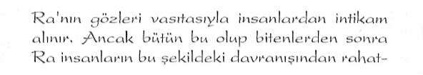
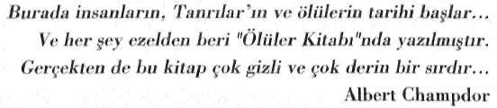
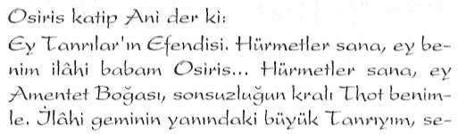
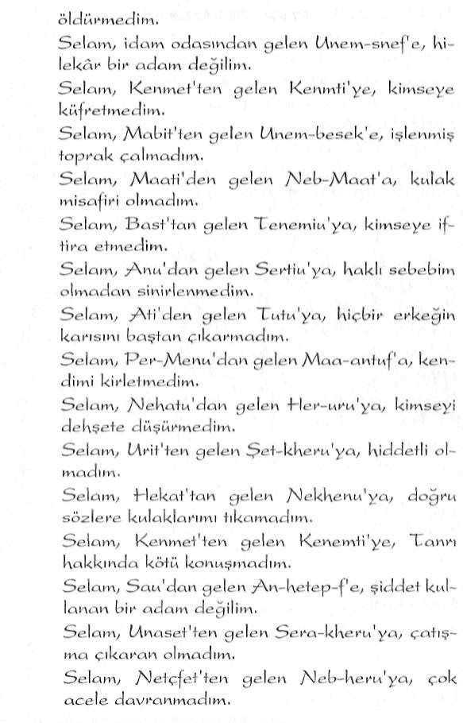
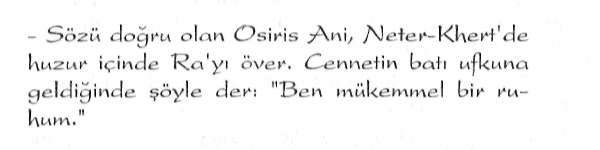

Eski Mısırlılar Evren'e ''Neter-Khert" ismini vermişti.
Neter-Khert, bu dünya üzerinde var olan süptil planların genel ismidir Bu kelime aynı zamanda, "öliilerin ziyaret etti
ği yer" anlamına da gelir.
223
Saklı Kütüphane
www.e-kitap.us
"ANTİK MISIR SIRLARI"
Tanrısal Evren
Neter-Khert'in bir diğer anlamı da "Büyüsel-Tanrısal Evren"dir: Evren'e büyüsel kavramının yüklenmesi, evrende işjleyen ve sadece inisiyelerce bilinen kozmik yasaların varlı
ğından dolayı idi. Evren kendisine özgü kozmik yasalarla işlemekteydi. Bu yasalar evrenin her bir noktasında geçerli olan değişmez prensiplerdi. Dolayısıyla dünyamızda da geçerli olan yasalardı bunlar. İşte dünya üzerinde de geçerli olan bu yasaları kullanabilme çalışmaları da "Majik Çalışmalar"m temelini oluşturmaktaydı. Bu çalışmalar o denli ileri bir boyuta ulaşmıştı ki, Mısır tam anlamıyla majik bir kültüre bürünmüştü. Majik teknikleri kullanmak son derece olağan bir iş haline gelmişti.
Mısır'ın Ölüler Kitabı ile ilgili çalışmalarıyla tanınmış
dünyaca ünlü araştırmacı E.A. Wallis Budge, "Neter" sözcü
ğünün üzerinde bir hayli durmuş ve bu sözcüğün ne anlama geldiğini ve Eski Mısırlı rahiplerce bu sözcüğe hangi anlamlar yüklendiğini farklı açılardan ele alarak ortaya çıkartmaya çalışmıştır. Budge'ye göre:
"Mısırlılar'ın Tanrı'ya ve her türdenı ruha ve herhangi bir insanüstü veya doğaüstü güce sahip oldu
ğu ileri sürülen her türden varlığa verdikleri genel isim Neter'dir."
Evet... Tanrı ya da İlâhi Varlığın Mısır dilindeki karşılığı
"Neter'dir.
Ezoterizm konusunda bir başka tanınmış araştırmacı Murry Hope ise, bu isimle ilgili olarak şu tespitlerde bulunur:
Saklı Kütüphane
www.e-kitap.us

Saklı Kütüphane
www.e-kitap.us

Saklı Kütüphane
www.e-kitap.us
"MISIR KOZMOGONİSİ"
"Kavramın hiyeroglif metinlerindeki kullanımıyla ilgili yoğun araştırmalar göstermektedir ki, hu kelimenin hir yaşara niteliği ya da ölümsüzlük veya ya
şamı eanlandırma kuvvetiyle ilgili okluğuna işaret etme yönündedir"
Dikkat edilirse Neter ile ilgili tüm açıklamalar birbirini destekleyen kavramlar üzerinde odaklanmaktadır.
Hiyeroglifler'de Neter ve Neferler
Neter sözcüğü Mısır'da şeklinde gösterilmekteydi.
Hiyeroglif yazıtlarmda ise şeklinde gösterilir. Eğer bu çoğul olarak yani Tanrılar anlamında kullanılmak istenirse veya şeklinde gösterilmiştir. Hiyeroglif yazı
dilindeki Tanrı ya da Tanrısallığı ifade eden. bu şeklin Kur'an terminolojisinde ve Batıni İslâm Kültürü'nde Bir olan Tanrı'yı ifade eden Elif harfiyle olan yakın benzerliği de dikkat çekicidir.
Kısaca özetlemek gerekirse: Mısırlılar Neter-Khert sözcüğüyle, Tanrısal bir yönetimin bulunduğu, farklı boyutlardan oluşmuş hiyerarşik işleyişin geçerli olduğu bir evren modelini dile getirmişlerdir.
Ölümden sonra serbest kalan ruhsal varlıklar, bu alemlerin çeşitli safhalarına gitmektedirler. Hatta sadece ölümden sonra değil, ölmeden önce de. Mısırlı rahipler bu alemlerle irtibata girebilmekteydiler. Bu irtibat Mısır İnisiyasyonu'nun en temel hedeflerinin başında gelmekteydi. Nitekim Thot'un Kitabı'nda Yedi Küre vizyonuyla bu konu inisiyelere ayrıntılı bir şekilde anlatılmaktaydı.
Saklı Kütüphane
www.e-kitap.us
"ANTİK MISIR SIRLARI"
Az sonra ayrıntılanyla göreceğimiz gibi Mısır'ın Ölüler Kitabı'nın muhtelif bölümlerinde de bu tema pekçok kez tekrarlanarak anlatılır: NETER - KHERT'İN KATLARI
Neter-Khert'te Mısırlı rahipler tarafından ziyaret edilen pekçok bölge vardı.
Mısır İnisiyasyonu'nun en derin sırlarından birini oluşturan Neter-Khert'i oluşturan bu bölgelerin Mısırlılarca nasıl tanımlandığını ve bu tanımlamanın ezoterik bilgilerde ne anlama geldiğini önce kısaca özetlemeye çalışalım. Daha sonra bunların ayrıntılarını tekrar ele alacağız:
Saklı Kütüphane
www.e-kitap.us
"MISIR KOZMOGONİSİ"
1- MAATİ SALONU:
Kişinin geçmiş söz ve davranışlarmın gözden geçirildiği yer. Bu dünya ile öte alem (Spatyom) arasmdaki tampon bölgedir.
2-ARİTLER:
Arit kelimesi "KabulSalonu" demektir. Ruhun öldükten sonra ilerlediği yedi kabul salonu vardır. Bunlar aynı zamanda bedeninden ayrılmış olan varlığın geçip bitirmiş olduğu satlıaları temsil eder.
3-TUAT:
Oniki kısma ayrılır. Tuat kelimesi "Astral Mekân" (Spatyom) anlamına gelir.
4- OSİRİS'İN EVİ:
Yirmibir Pilon'a ayrılır. Pilonlar sübtil dünyadaki farklı safhalardır. Spatyom'un üst merhalelerini ve Ruhsal İdareci Planları ifade eder. (47)
5- AATLAR:
Onbeş tane aat vardır. Kelime olarak "Bölümler" anlamına gelir. Aynı zamanda geçirilen şuur halleridir.
6- SEKHET-HETEP:
"Barış ve Beslenme Tarlası"dır. Dört ana bölüme ayrılır.
Ruhun ulaşacağı en üst düzeydeki planın adıdır.
İşte tüm bu planları da Tanrılar yönetmekteydi...
Saklı Kütüphane
www.e-kitap.us
"ANTİK MISIR SIRLARI"
MİTOLOJİK TANRILAR
Klasik Mitoloji kitaplarından herhangi birisini açtığınızda, tıpkı Antik Yunan'ın Olimpos Tanrıları gibi Mısır Mitolojisi'nde de bir "Tanrılar Birliği"nin bulunduğunu; insanların da bu Tanrılar'a tapmakta olduklarının yazılı olduğunu görürsünüz. Ancak bu tespitte eksik olan birçok noktalar vardır.
Çünkü eski uygarlıkların mitolojilerinde olduğu gibi Antik Mısır Kültürü'nün ve özellikle de Mısır İnisiyasyonu'nun bir yansıması olan bu mitolojik Tanrı sembollerinin tümü, sembolik bir anlama sahiptir. İşte eksik olan da budur. "Tanrılar Birliği"nin ne anlama geldiği anlaşılamadıgı için bu basit bir putperest inancı olarak yorumlanmıştır.
Mısır Mitolojisi'nde karşımıza çıkan "Tanrılar Hiyerar
şisi", tıpkı Yunan'ın Olimpos Tanrılar Hiyerarşisi'nde olduğu gibi "Evrensel İdare Mekanizması"mn sembollerle ifadesinden başka bir şey değildir.
Tanrılar (İlâhi Varlıklar) Birliği
Mısır Mitolojisi'nde Ra tarafından yönetilen bir Tannlar Birliği vardır. Bu birliğe ilâhlar birliği de denebilir. Mısır inisiyatik anlayışına göre: "İnsanlar ölümlü Tannlar, Tannlar ise ölümsüz insanlardır." Bu söz, o dönemlerde yaşayan bir Mısırlı'nın düşünce sistemini anlayabilmek için çok önemli bir ipucudur. Antik Mısır Kültürü'nün bu düşünce sistemini daha iyi kavrayabilmek için, "Tanrılar - İhâhlar'" ve "İnsanlar" meselesini ve bu isimlere yüklenen anlamlan ezotcrik bakış açısı altında ele almak gerekir.
Önce İnsanlardan başlayalım...
Saklı Kütüphane
www.e-kitap.us
"MISIR KOZMOGONİSİ"
İNSANLAR
Mısır'ın Thot Öğretisi'ne göre insanlar dört ayrı grupta değerlendirilmekteydi.
"Ölümlü Otomatlar": Özel eğitimden geçirilmemiş, ya
şamı içgüdüleri ile algılayan kapalı şuurlu, otomatizmaya bağlı yaşayan insanların oluşturduğu ilk gruptur. Bu gruptakiler her türlü spiritüelliğe kapalıdırlar.
"Ölümlüler": Eğitilmiş olmakla birlikte henüz içsel görüş kazanamamış olanlar. Bu gruptaki varlıklar spiritüel şeylere inanmakla birlikte sadece inanç varlıklarıdır. İnançlarını kuvvetlendirmek için mucize ve alametlere ihtiyaç duyarlar.
"Uyanmış Bilinçler": İnisiyasyondan geçmiş, içsel görüş kazanmış, kabuklarını kırmış yani uyanmış insanların aşamasıdır. Bu gruptaki insanlar evrendeki diğer yaşam biçimleri ile uyumlu bir hale gelmiş olanlardır.
"Işık Varlıklar": Işıkla bir olmuş olanlar. Bu grupla ilgili ayrıntılı bilgi verilmemiştir. İnisiyasyonun son aşamasma ulaşabilenlerin safhasıdır.
"Ölümlüler", "Uyanmış Bilinçler" ve "İşıklı Varlıklar"
aynı zamanda üç aşamalı Mısır İnisiyasyonu'nun aşamalarına da karşılık gelmekteydi.
TANRILAR - İ L A H L A R
Eski Mısır Mitolojisi'nde karşımıza çıkan Tanrılar sözcü
ğünün altında birden fazla anlam gizlidir.
Mısır Mitolojisi'nin Tanrılar Birliği'ni oluşturan ve Tann-1ar olarak ifade edilen semboller, başlıca beş farklı anlama sahiptir: .
Saklı Kütüphane
www.e-kitap.us
"ANTİK MISIR SIRLARI"
1- Mısır Mitolojisini oluşturan Tanrılar Birliği öncelikle
"Evrenselİdare Mekanizması"mi\ (48) hiyerarşik yapısını ifade eder.
2- Bu Tanrılar Birliği içinde Siriusyen Kültürü ya da bizzat "Siriusyen Kültür Temsilcileri"ni sembolize eden ileri seviyeli "Galaktlk Varlıklar" da bulunmaktadır. Mısır Mito-
; lojisi'ndeki Anubis, Şu, Tefnut gibi Tanrılar bu tür varlıkların sembolleridir. Bunlar da Evrensel İdare Mekanizması içinde değerlendirilebilirler çünkü "Evrensel İdare Mekanizması"nı oluşturan unsurlarındandır. Ama yine de bunlar Ezoterizm'de ayrı bir bölüm içinde değerlendirilmektedir.
3- Bazı Tanrı isimlerinin üçüncü bir anlamı ise Kozmik işleyişi yöneten "Evrensel Yasalar"la ilgilidir. Tanrılar Birli
ği içindeki bazı Tanrı isimleri Evrensel - Kozmik Yasaları ifade eder.
4- Mısır Mitolojisi'ndeki bir diğer grup Tanrısal Varlıklar ise doğrudan Mu ile bağlantılı Atlantisli rahiplerdir. Bunlar da Mısır Mitolojisi'nde Tanrılar olarak nitelendirilmiştir. Burada tekrar belirtelim ki, bunlara Tanrı ismini Klasik Mitoloji araştırmacıları takmıştır. Mısırlılar'a göre bunlar İlâhi Varlıklar'dı.
(Osiris, Thot, gibi...)
5- Bazı ezoterik bilgileri aktarmak için kullanılan sembollerdir. Bu grup içinde kullanılan sembollerle, dünyamızda meydana gelen fiziksel ve ruhsal değişimlerle ilgili meseleler anlatılır. Çoğunlukla bir olgu ya da bir uygarlığı anlatmak için kullanılmıştır.
Saklı Kütüphane
www.e-kitap.us
"MISIR KOZMOGONİSİ"
Ezoterik Sırlar Sembollerde Gizli
Yukarıda maddeler halinde özetlediğimiz bazı Tanrı sembolleri bazen kullanıldıkları yere göre birden fazla da anlama sahip olabilmektedir. Yani aynı isim birden farklı anlamlarda da kullanılmıştır. Aynı durum diğer semboller için de geçerlidir. Bu, mitolojik anlatımın bir özelliğidir. Sırlar kat kat birbiri içine bohçalanarak saklandığı için, tek bir sembolle, birden fazla anlam iç içe bohçalanmış durumdadır. Buna bir örnek vermek gerekirse Osiris'i gösterebiliriz. Osiris hem birinci, hem de dördüncü gruptaki Tanrılar sembolizmine ait niteliklere sahiptir. Yani bazen biri, bazen ise diğeri mitlojik bir unsur olarak kullanılmıştır. Hangisinin nerede kullanıldığını anlayabilmek için kullanılış şekline bakmak yeterlidir.
Evet... Artık Mısır Kozmogonisi'ni oluşturan Tanrılar sembollerini bilinen ve bilinmeyen yönleriyle teker teker ele almaya başlayabiliriz.
(Parantez içindeki numaralar, o Tanrı Scmbolü'nün hangi gruba ait olduğunu göstermektedir.)
Nu (I ,3,5)
Tanrı Nu tüm tezahürlerin babasıdır. Tüm hayatın tohumlarını barındıran denizdir.
Ra-Atum (1 ,3,5)
Osiris, İsis, Neftis ve Set'in babasıdır.
Ra'nın sembolü daire ve güneştir.
Doğmamış haldeki ya da batan güneş
ise Atum adını alır. (49)
Saklı Kütüphane
www.e-kitap.us
"ANTİK MISIR SIRLARI"
Tem (1 ,3, 5)
En yaşlı Tanrılar'dandır. Batan güneş olarak ifade edilen yaratıcı bir Tanrı'dır. Kuzey ve Güney Tacı'nı giyen kral olarak gösterilir.
Nu, Ra,Tem (5)
Mısır Mitolojisi'nde Nu, Ra ve Tem'in birlikte ele alındı
ğı bir bölüm vardır. Bu Mitolojik anlatımda söz konusu Tanrılar sadece 5. Grup'taki anlamlarıyla karşımıza çıkmaktadır.
Eski bir Mısır yaradılış efsanesine göre:
Ancak hemen belirtelim ki, bu yoktan varoluşu ifade eden ilk başlangıç değildir. Bizim devremizin başlangıcıdır.
Yani "Demir Çağı"nın başlangıcı...
Burada Tanrı Nu olarak ifade edilen sembol. Mu Uygarlığı'na karşılık gelmektedir. Mu ile ilgili bilgilerin kayıtlı oldu
ğu tüm eski yazıtlarda, insanlığın ilk ana vatanının Mu olduğu açık bir şekilde dile getirilmiştir. Mu'nun sulara gömülmüş
olmasından dolayı, Mu'nun sembollerinden biri de denizdir.
Mısır Kozmogonisi'nde Nu'dan, "tüm hayatın tohumlarım barındıran denizdir" diye sözedilmesinin nedeni de budur.
Ayrıca "Nu" sözcüğü ile "Mu" sözcüğünün benzerliğine de dikkatlerinizi çekmek isterim.
Buradaki suyla ilgili anlatımlar, farklı toplumların kutsal kitaplarında da geçer. Örneğin Tekvin Bölümü'nde dünyanm yaradılışıyla ilgili ilk satırlar şöyle başlar:
Saklı Kütüphane
www.e-kitap.us
"MISIR KOZMOGONİSİ"
Başlangıçta Allah gökleri ve yeri yarattı. Ve yer ıssız ve boştu; ve enginin yüzü üzerinde karanlık vardı; ve Allah'ın Ruhu suların yüzü üzerinde hareket ediyordu. (Tekvin Bap 1/1-2) Kutsal kitapları bilimsel bulgularla karşılaştıran birçok araştımıacı, dünyanın yaradılışı ile ilgili olduğu varsayılan bu metinlerde geçen suların ne anlama geldiğini bir türlü bulamadıkları için, evrenin bu başlangıç aşamasında bir gaz kütlesi ile dolu olduğunu ve orda suyun bulunduğunu söylemenin tamamen bir hata olduğunu ileri sürmüşlerdir.
Burada hesaba katılmayan mesele söz konusu metinlerde anlatılan başlangıcın hangi başlangıç olduğudur. Burada dile TEM
Saklı Kütüphane
www.e-kitap.us
"ANTİK MISIR SIRLARI"
getirilen başlangıç dünyanın ilk varoluşu değil, dünyanın Tufan sonrası yeni bir çağa geçtiği dönemdir. Ve burada geçen sular kavramı mecazi değil, reel bir kavramdır. Bilinen anlamıyla dünya üzerindeki birçok bölgenin Tufan sırasında sular altında kalmasını anlatmaktadır
Kaldığımız yerden devam edelim...
Efsanenin ayrıntılarında da bu konuyla ilgili hayli önemli ipuçları bulunmaktadır: Efsaneye göre:
isyan eden bu halk hakkında efsanede başka bir bilgi ya da ipucu verilmez. Bu da, efsanede sözü edilen halkın bizim devremize ait bir halk olmadığı fikrini destekler.
Bu efsanede anlatılanlar, Mu Uygarlığı'nın varlığını sürdürdüğü dönemlerde hayli ileri düzeyde bir kültürün dünyaya hakim olduğundan söz eden ezoterik bilgi ve kayıtlarla büyük bir paralellik gösterir.
'Nu"dan sonra "Ra" yönetimi ile anlatılmak istenen
"Atlantis Dönenıi"dir Gerçekten de Atlantis'in ilk dönemlerinde Mu Kültürü'nün hakim olduğu hayli ileri düzeyde bir yaşam düzeyinin mevcut olduğunu, ancak zaman ilerledikçe bu kültürün dejenere olmaya başladığını biliyoruz. Efsanede bu husus, mitolojik bir üslupla sembolik olarak anlatılmıştır.

Saklı Kütüphane
www.e-kitap.us
"MISIR KOZMOGONİSİ"
Efsanedeki bu mitolojik anlatım üslubu içindeki sembolleri alt alta maddeler halinde sıralayalım:
"Ra'mn genç ve şevkli olduğu günler": Atlantis'in ilk dönemleridir.
"Barış sever yönetim": Atlantis'teki Altın Çag'ı anlatır.
Ancak zamanla bu gidiş negatif anlamda bir iniş göstermiştir. Atlantis'in son dönemlerine doğru çıkan pozitif negatif çatışması en sonunda ciddi bir savaşa dönüşmüştür ki, efsanede bu durum, açıkça şu satırlarla belirtilmiştir:
"Ancak yaşı ilerledikçe kendisine bağlı olanlar onun zayıfladığını hissedip ona başkaldırarak isyan etmişlerdir."
Efsane bu isyandan sonrasını özetle şöyle anlatır: Güneşin gözünün insanlara intikam için yönelmesi, başlı başına kozmik bir felâketin göstergesidir. Dünyamızda meydana gelen ve bizim devremizin başlangıcını oluşturan Tufan, bu yönelmenin sonunda gerçekleşmiş olmalıdır.
Efsane bizim devremizin başlangıcını ise şöyle anlatır:
Saklı Kütüphane
www.e-kitap.us
"ANTİK MISIR SİRLARİ"
Daha önce aynı sembolün birden farklı anlamlarda kullanılmış olduğundan söz etmiştik. Burada bunun açık bir örne
ğiyle karşılaşmaktayız. Ra'nın daha önce Atlantis Kültürii'nü sembolize ettiğinden söz etmiştik. Burada da yine aynı şekilde Atlantis'teki bilgeliğin sembolü olarak kullanılmıştır.
Ra'nm "insanlardan intikam alması" ve "evrenin ötelerine gizlenmesi" dünya üzerinde yaşayan insanların bilgelikten uzaklaşmaya başlayacağını anlatmaktadır. Bu da, başlayan bizim devremize ait insanların bilgiden mahrum yaşayacaklarının açık bir sembolüdür. Efsanenin bu bölümünde Demir Çağ'ın başlangıcı anlatılmaktadır Demek ki önceden Doğu'dan Batı'ya hareket etmiyordu.
Bu da dünyanın kutupsal bir değişime maruz kaldığını göstermektedir (51)
"Yeni düzen" tanımlamasıyla Tufan'dan sonra başlayan bizim devremize ait süreç anlatılmaktadır
"Tanrıça Nut" sembolü ise Kur'an-ı Kerim'de geçen
"Nuh Tufanı"na karşılık gelir.
İlk başta son derece basit bir efsane gibi görülen bu anlatımlarda gördüğünüz gibi, Dünya'nın ezoterik geçmişi ile m '
Saklı Kütüphane
www.e-kitap.us
"MISIR KOZMOGONİSİ"
ilgili pek çok sır, perdeli bir şekilde Tanrılar ve Tanrıçalar sembolleri kullanılarak anlatılmış durumdadır.
Şu ve Tefnut (2,3)
"Şu": Ra ve Hathor'un oğlu, Tefnut'un ikiz kardeşidir.
Gökyüzünü yani Nuit'i kaldırdı ve topraktan yani Seb'den ayırdı. Elinde tüy olan ya da iki tüylü başlığı olan insan şeklinde gösterilir.
"Tefnut": Ra ve Hathor'un kızı, Şu'nun ikizidir. Nemdir, ayra zamanda güneş ışığının yaratıcı gücüdür. Aslan başlı insan şeklinde gösterilir. Başının üstünde bir disk vardır.
Firavunlar döneminde astrolojik çağ olarak ikizlerin egemenliği söz konusuydu. Mısır'da ikizler Şu ve Tefnut isimli mitolojik Tanrılar'la semboUeştirilmişti. Mısır Mitolojisi'ne göre İkizlerin görevleri, göklerle yeryüzünü birbirlerinden ayırmakü. Mısır'ın Ölüler Kitabı'nda ikiz aslan Tanrılar olarak tanımlanmışlardır.
Bu mitolojik sembolizmin anlamı son derece açıktır. İkizler öncelikle düaliteyi yani ikiliği sembolize eder. Bu Tanrılar'in göklerle yeryüzünü ayınnası ise, insanların göksel-se-mavi irtibatlarını yavaş yavaş kaybetmeye başlayacakları anlamına gelir. İçine girdiğimiz "Demir Çağ"ın bir anlatımıdır.
Ancak bu irtibat eskisi gibi yani Mu'da olduğu gibi açık ve kuvvetli bir şekilde olmasa da yine de belirli bir oranda Mısır'da devam ettiğini Tefnut'un Aslan Başlı ancak insan şeklinde gösterilen sembolünden anlayabiliyoruz.
Bu sembol söz konusu göksel irtibatın adresini de bize verir. Bu adresin merkezi Siriusyen Kültür'dür. Çünkü daha önce de değinmiş olduğumuz gibi hem Ezoterizm'de hem de Mitolojiler'de Sirius'un sembollerinden biri de Aslan'dır.
Saklı Kütüphane
www.e-kitap.us
"ANTİK MISIR SIRLARI"
Hathor( 1,2,4)
Bir Gökyüzü Tanrıçasıydı. Çok
eski dönemlerde Ra'mn kızı olarak
nitelendirilmişti. Sonraları Horus'un
eşi Het Heru olarak isimlendirildi.
Het Heru "Horus'un Evi" anla-
mma gelen bir isimdir. Bu eski dönemlerin Gökyüzü Tanrıçası genellikle başmda bir disk ve bonuzları olan bir kadın olarak gösterilirdi.
Horusla olan ilintisi, Siriusyen
Kültür'le olan bağlantısını göstermektedir. Başının üzerindeki yılan sembolü de bunu desteklemektedir.
Hor- Horus (1 , 2)
Horus ismi Eski Mısır'da "Hor" olarak anılmaktaydı. Horus Eski Yunanca'daki karşılığıdır.
Ezoterik Öğretiler'de Dünya Rabbi'nin sembolüdür. Horus'un bilinen en yaygın sembollerinden biri Ra'mn sol gözü olarak ifade edilen göz şeklindeki amblemidir. Dünyayı görüp gözeten ve "Evrensel İdare Mekaniztnası"nın bir unsuru
Saklı Kütüphane
www.e-kitap.us
"MrSIR KOZMOGONİSİ"
olan "Siriusyen Kültür"ün dünyayı görüp gözeten ve kontrol eden keskin gözünün sembolüdür.
Mitolojik anlatımlarda genellikle şahin ya da şahin başlı insan görünümünde sembolleştirilmiştir.
Yolculuğu simgeleyen bir kayık
içinde ve başının üstünde bir yıldız
amblemi ile temsil edilen şekli en
yaygın olanıdır.
Yolculuktan kasıt kozmik irtibat
ya da bir başka değişle kozmik tesirlerin dünyamıza gelişidir. Kozmik tesirlerden kastedilenin ne olduğu, şahin başlı insan vücutlu Horus sembolünün üstündeki yıldız ambleminde gizlidir.
Horus ve Seth'in Mücadelesi (1, 2, 3)
Mısır Mitolojisi'nde negatif güçlerin ve şeytani - negatif enerjilerin sembolü olan Seth, Horus ile sürekli bir savaş
içindedir. Bu, evrendeki pozitif ve negatif güçlerin sembolü olduğu gibi; bu savaş aynı zamanda vicdanın nefsaniyetle olan mücadelesidir. Bu pozitif ve negatif enerjilerin dünya üzerine de çok büyük etkileri vardır. (-3-)
Hatta Atlantis'te başlayıp daha sonraları bizim kıtalarımızda birbirleriyle mücadelelerini süren Agarta ile Şambala'nın beslendikleri ana kaynak da, Horus ile Seth'in temsil ettikleri kozmik planlardır. Agarta ve Şambala, bu planlardan aldıkları enerjileri dünyaya yansıtan birer paratoner işlevi görmüşlerdir. Bu işlevleri bugün de sürmektedir. (-1-) Antik Mısır Metinleri'nde Horus'un akla gelebilecek her
Saklı Kütüphane
www.e-kitap.us
"ANTİK MISIR SIRLARI"
türlü şeytani silahı kullanan Seth ile mücadelesi, menfiliğe ve karanlığa karşı savaşan ışığın; ışık güçlerinin mücadalasi olarak anlatılır. Işık Güçleri, Şahin başlı Horus sembolünün üstündeki Sirius'u ifade eden bir yıldızla gösterilmiştir.
Ve Eski Mısır Kültürü'ne ait pek çok ezoterik metinde de Horus, Dünya'ya Sirius'tan gelen tesirlerin kaynağı olarak tanımlanmıştır. (-2-) Horus'un karşıt kutbu Seth, Mısır Mitolojisi'nde Osiris'in kardeşi ve katili, Neftis'in kocası ve Ra'nın oğlu olarak tanımlanır.
Mısır Ezoterizmi'nde Seth, Kur'an-ı Kerim tenninolojisinde geçen Şeytan sembolüne karşılık gelir.
HORUS
SET
AYDINLIK VE KARANLIK GÜÇLER
Her iki sembolde görülen başlıkların birbirlerine ne kadar çok benzediğine dikkat ediniz. Her ikisinin de benzer başlıklara sahip olması mitolojide tanımlanmış olduğu gibi denk güçlere sahip olduklarının bir göstergesidir. Aynı Agarta ve Şambala'da olduğu gibi.
Saklı Kütüphane
www.e-kitap.us
"MISIR KOZMOGONİSİ"
Seth ile ilgili Mitolojik anlatımlar bu yorumumuzu tam anlamıyla desteklemektedir. Mısır Mitolojisi Seth'i Horus'la güçleri denktir diye tanımlar ve hemen arkasından şöyle bir açıklama yapar. Özetle aktarıyorum:
Sırtlana benzeyen (ama hangi hayvan olduğu tam olarak anlaşılamayan) bir hayvan şeklinde resmedilen Seth ile İlgili anlatılanlar, görmüş olduğunuz gibi Kur'an-ı Kerim terminolojisinde Şeytan'la ilgili anlatılanlara tıpa tıp uymaktadır.
Kur'an-ı Kerim'de de Şeytan'in bir melek olduğu ancak ancak daha sonra Rabbi'ne isyan ettiği için insanları negatif alana yönlendirmek için çalışmaya başladığı anlatılır. İşlenen tema aynıdır. Çünkü anlatılmak istenen bilgi aynıdır. Bu bilgi de Seylan'ın negatif enerji üreten ve bunu insanlığa yansıtan ruhsal bir plan olduğudur... Dini terminolojideki adı Şeytan, Mısır Mitolojisi'ndeki ismi ise Seth'tir. İsimler bile birbirine ne kadar çok benziyor, öyle değil mi?... Tabii Satanizm isminin benzerliğini de ayrıca vurgulamak gerekir.
Anubis (1)
Mısır yazıtlarında Köpek başlı insan olarak sembolleştirilmiştir. Mısır Mitolojisi onu Tuat'ın rehberi ve Neter-Khert'te koruyuculuk fonksiyonu gören bir Tanrı olarak tanımlar. Osiris ve Neftis'in oğlu, Horus'un üvey kardeşidir.
Horus'un üvey kardeşi olarak nitelendirilmesi de son derece manidardır. Burada ince bir nüansla çok önemli bir
Saklı Kütüphane
www.e-kitap.us
"ANTİK MISIR SIRLARI"
ANUBIS
Saklı Kütüphane
www.e-kitap.us
"MISIR KOZMOGONİSİ"
bilgi anlatılmak istenmiştir. Üvey kardeş değil de kardeş denseydi sembolde anlatılmak istenen bilgi çok farklı olurdu.
Kısaca bunu açalım...
Horus, Siriusyen Kültür'e ait bir varlığı sembolize ettiğine göre, kardeşi denseydi, bu plana ait bir başka varlık ya da bu plana benzer bir başka ruhsal planın burada kastedilmiş
olabileceğini düşünürdük. Ama üvey kardeş denmiştir. Yani yine aynı vazifeyle görevli Horus'un temsil ettiği plana karşı sorumlu olan, bir alt kademedeki plan burada kastedilmektedir.
Peki bu sistemin kimliği belli midir? Evet... Ezoterizm'de bunun cevabı mevcuttur.
Bu sistemin kimliği Anubis'in şekilsel sembolünde gizlidir. Anubis'in tüm Mısır yazılı metinlerinde dik kulaklı köpek kafasına sahip bir insan şeklinde sembolleştirilmiş olması önemli bir anlamı vardır. Yani rast gele seçilmiş bir hayvan değildir.
Aynen Eski Türk Gelenekleri'nin en önemli sembollerinden biri olan Kurt'da olduğu gibi...
Dik kulaklı bir köpek kafası ya da Kurt Büyük Köpek Takım Yıldızı'nın bir üyesi olan Sirius Yıldız Sistemi ile ilintilidir. Türkler'in Kültür Kö)kenleri isimli son kitabımda ayrıntı-arıyla açıklamış olduğum gibi, Eski Türk Mitolojisi'niıı en özgün ve en önemli sembolü Kurt'tur. (52)Ezoterizm'de Kurt ya da dik kulaklı köpek Sirius Yıldız Sistemi'nin sembolüdür.
Ancak burada bir başka ayrıntıya daha dikkat etmemiz gerekmektedir.
Mısır hiyerogliflerinde resmedilen Anubis'in başı köpek, vücudu ise insan olarak çizilmiştir. Yani sadece köpek ya da sadece insan değil, ikisinin karışımıdır. Bu sembolik özelliği, mitolojide sözü edilen Horus'un üvey kardeşi olmasıyla da büyük bir paralellik gösterir.
Saklı Kütüphane
www.e-kitap.us
"ANTİK MISIR SIRLARI"
Tüm bu inceliklere dikkat ederek konuyu tek bir cümleyle özetleyecek olursak, şunları söyleyebiliriz: Anubus Sirius Kültürü İle dolaylı olarak bağlantılı dünya spatyomunda bedensiz varlıklara yardımcı olan vazifeli bir varlıktır.
Metapsişik araştırmacıların rehber varlıklar olarak isimlendirdiği türden bir varlıktır. Ya da bu tür vazifeli varlıkların genel ismidir. Mısır Mitolojisi'nde ölülerin kalbini tartması da, bu yorumumuzu desteklemektedir Bu konuya, Mısır'ın Ölüler Kitabı'm incelerken tekrar döneceğiz...
Osiris (1,4)
Ölüler Tanrısı'dır Seb ve Nuit'in oğludur. İsis, Neüis ve Set'in kardeşidir
Mısır Mitolojisi'ne göre: Başlangıçta Osiris "Doğa Tannsı"ydı. Kardeşi Set tarafından öldürüldükten ve Thot'un sihirli asası yardımıyla karısı İsis tarafından tekrar canlandırıldıktan sonra "Ölüler Tanrısı" olmuştur Adı "reenkarne olan" demektir.
Evet Mısır Mitolojisi'nde Osiris bu şekilde tanımlanır.
Ancak buradaki "Ölüler Tanrısı" tanımlaması bilinen ölüm olayıyla ilgili değildir. Mısır Ezoterismi'nde ölü inisiyeyi sembolize eden Bu sembolik bilgi dikkate alındığında Osiris'in İnisiyeler'in başı olduğu anlamı çıkar Yani Mısır İnisiyasyonu'nun lideridir Bu liderin kimliğini daha önce açıklamıştık.
Aynı zamanda Evrensel İdare Mekanizması'nin ruhsal planlarından, vahiy mekanizmasıyla ilgili vazifeli planın da sembolüdür
Bu açıklamalarımızdan da anlaşılacağı üzere, Osiris hem birinci heın de dördüncü gruba ait sembolik anlamlara sahiptir.
Saklı Kütüphane
www.e-kitap.us
"MISIR KOZMOGONİSİ"
OSİRIS
Saklı Kütüphane
www.e-kitap.us
"ANTİK MISIR SIRLARI"
İsis (1,4)
Osiris'iıı karısı ve kardeşi, Horus'un annesidir. "Güç Sözlerinin Efendisi" ve "Doğa Tanrıçası"dır. Başında tahta benzeyen başlığı olan kadınla gösterildiği gibi bazen de başmda güneş kursu ve boynuzlu başlığı olan bir kadın şeklinde de ifade edilmiştir. Ve heykel ya da resimlerinin çoğunda alnını çevreleyen bir yılan vardır. (53)
Mısır İnisiyasyonu'nda çok önemli bir yere sahip olan kabinelerin sembolüdür. "Güç Sözler'in Efendisi" tanımlamasıyla Mısır Mitolojisi bunun ipucunu vermektedir
Aynı zamanda Osiris'te olduğu gibi. Evrensel İdare Mekanizması'nın vazifeli planlanndan da birinin sembolü konumundadır. Yani hem birinci hem de dördüncü gruba ait bir semboldür.
Thot (4)
Mısır Mitolojisi'ne göre "Bilgelik Tanrısıdır. Genellikle balıkçıl başlı insan olarak gösterilir. Maat'ın kocasıdır-. Thot,
"Osiris'in Doğruyu Söyleyeni "dır. İnsanların dünyada söylediği tüm sözleri ve yaptığı her işi kaydeder ve sonuçları Osiris'e bildirir.
Birçok eski kayıt Thot'tan Mısır topraklarına Yengeç Zodyak Çağı'nda gelen bir yabancı olarak söz eder. Bu son derece önemli bir tanımlamadır. Çünkü Yengeç Zodyak Çağı Atlantis'in batışından sonraki ilk çağdır.
Eski Mısır kayıtları arasında önemli bir yere sahip olan Piramit metinlerinde Thot'un "Tanrısal Konuşma Bilgisi'ne sahip olduğunu söyler. Yine aynı metinlerde sanat ve bilimlerin kurucusu olduğu, sesinin çok güçlü bir etkiye sahip oldu
ğu anlatılırken, ondan "Tanrıların Yazıcısı" olarak bahsedilir.
Bu mitolojik anlatımlarda geçen üç tanımlama Thot'un ezoterik kimliğini açık olarak olmasa da, üstü örtülü bir şekil-
Saklı Kütüphane
www.e-kitap.us
"MISIR KOZMOGONİSİ"
ISIS
Saklı Kütüphane
www.e-kitap.us
"ANTİK MISIR SIRlARr"
de dile getirir.
"Bilgelik Tanrısı", "Osiris'in Doğruyu Söyleyeni",
"Tanrısal Konulma Bilgisine Sahip Olmak" ve "Tanrılar'ın Yazıcısı"
Thot'un, kökeni Mu'ya ait olan öğretiyi Atlantis'ten getiren bir rahip olduğunu göz önüne alarak yukarıdaki tanımlamaları değerlendirecek olursak, her şey çok daha anlaşılır bir THOT
Saklı Kütüphane
www.e-kitap.us
"MISIR KOZMOGONİSİ"
hale gelecektir...
Bu tanımlamaların ne anlama geldiğini kısaca maddeler halinde sıralayalım:
"Bilgelik Tanrısı": Önde gelen inisiyatörlerden biri olduğunu gösterir.
Bir sonraki tanımlama bu inisiyasyonun ismini açıkça or-
taya koymaktadır. "Osiris'in Doğruyu Söyleyeni"
"Tanrısal Konuşma Bilgisine Sahip Olmak": Mısır'da Tanrılar'la birlikte yaşanan dönemler ve Tanrısal konuşma lisanı tanımlamalarına sıklıkla rastlanır. Bu ifadelerde kastedilen dönem Mu Uygarlığı'nın dünya üzerinde varolduğu süreç, Tanrısal Lisan ise Mu'da konuşulan dildir.
Bu konuyla ilgili tarihi kayıtlarımıza geçmiş satırlar da bulunmaktadır. Bu kayıtlar ünlü Tarihçi Herodot'a aittir.
Herodot'un Mısır'daki seyahati sırasında Teb Rahipleri ona 341 dev heykel göstermişler ve bunların 11.340 yıllık Mısır Tarihi içinde dikildiklerini söylemişlerdi.
Teb Rahipleri'nin bu konuda anlattıkları arasında ilginç bir cümle geçmektedir (Herodot bu cümleyi Tarih Kitabı'na olduğu gibi almıştır.) Teb Rahipleri bu heykellerin kendi geçmiş nesillerine ail olduklarını ancak bu heykellerin yapımından önce Tanrılar'ın insanlar arasında yaşadıklarını
söylemişlerdi.
Gelelim son tanımlamaya...
"Tanrılar'ın Yazıcısı": Thot'un Atlantis'te Osiris Öğreti-
Saklı Kütüphane
www.e-kitap.us
"ANTİK MISIR SIRLARI"
sı adı altında yaşamakla olan Mu Bilgeliğini Mısır'a geliren bir rahip olduğunu ve bu öğretiye ait sırlan kendi adıyla anılan bir kitapta (Thot'un Kitabı) yazmış olduğunu dikkate aldı
ğımızda mitolojik anlatımlarda geçen "Tanrılar Katibi" tanımlamasının ne anlama geldiği sanınm tüm açıklığıyla ortaya çıkmaktadır.
Thot'un Asası
Thot'un Asası da başlı başına üzerinde durulması gereken önemli sembolik unsurlara sahiptir. ,
Thot'un Yılanlı Asası
Saklı Kütüphane
www.e-kitap.us
'MISIR KOZMOGONİSİ"
Mu'dan Atlantis yoluyla çevre kıtalara taşman sembollerden biridir. Yunanistan'da, Mezopotamya'da, Hindistan'da arkeolojik kazılarda sıklıkla karşımıza çıkmış olan bir semboldür.
Yılan sembolünün "Yılan Oğullan" ya da "Tann Oğullan" olarak ifade edilen "Galaktik Uygarlığın" sembolü olduğunu biliyoruz.
Bir eksen üzerine spiral bir tarzda dolanan iki yılan bu Galaktik Uygarlığın adresini göstermektedir. Şeklimizde görmüş olduğunu birbirine sarılmış iki yılan Sirius A ve Sirius B
yıldızlarının karşılıklı olarak çizdikleri yörüngelerinin sembolüdür. , Asa'nın üst noktasındaki kanatlar da daha önce söylemiş
olduğumuz gibi Sirius Yıldızı'nın sembolüdür. Böylelikle yılan ve kartal bir arada kullanılarak birbirlerini destekleyen bir özellik sergilemektedirler. Böylelikle her iki sembol birbirlerini desteklemiş olmaktadır.
Sirius A ile Sirius B'nin karşılıklı çizdikleri yörüngeleri
Saklı Kütüphane
www.e-kitap.us
"ANTİK MISIR SIRLARI"
Ptah (1)
Hayat'ın Efendisi'dir, Mısır Mitolojisi'nin en eski Tanrılarındandır. Yaratıcıdır ve insan bedeni yarattıklarından bir tanesidir. Sakallı, başı kel ve sargılarının arasından ellerini çıkarmış bir vaziyette gösterilir. Elindeki asası diğer asalara göre daha farklıdır.
Gizli Sırlar Öğretisi isimli kitabımda ayrıntılarıyla açıklamış olduğum gibi, dünya üzerinde yaşamlarını sürdürecek ilk insan bedenleri (ademleri) Galaktik Uygarlıklar'ca oluşturulduğundan bahsetmiştim.
Ptah, işte dünya üzerinde ilk insanların bedenlerini oluşturan Galaktik Uygarlıklara ait varlıkların sembolüdür.
Maat(l ,3)
Thot'un karısı, Ra'nın kızıdır Kanun ve adaleti temsil eder. Başında tüylü başlığı olan kadın şeklinde gösterilir.
Mısır Metinleri'nde geçtiği yere göre farklılık gösteren, Maat'ın üç ayrı anlamı vardır;
PTAH
MAAT
Saklı Kütüphane
www.e-kitap.us
"MISIR KOZMOGONİSİ"
1- Öte Alemi
2- Öte Alem'de işleyen ve varlıkların yaşam planlarını yönlendiren Sebep Sonuç Yasası'nı. Bu yasa Karma Yasası olarak da isimlendirilmektedir.
3- Öte Alem'de bedenini terketmiş olanlara rehberlik eden bedensiz vazifeli varlıkları.
Nuit (1)
Osiris, İsis, Neftis ve Set'in annesidir. Nuit ebedi annedir.
Genellikle dünya üzerine eğilmiş bir vaziyette gösterilir Bedeni yıldızlarla süslenmiş olarak resmedilmesi, Nuit Tanrıçası'nm semavi - kozmik tesirlerin sembolü olduğunu göstermektedir.
NUİT
Saklı Kütüphane
www.e-kitap.us
"ANTİK MISIR SIRLARI"
Nuit'in kızı olarak tanımlanan Neftis de göksel - semavi tesirleri alıp bir paratoner gibi dünyada çevresine yansıtan varlıkları sembolize etmektedir.
Üzerinde "Evin Hanımı" hiyeroglifi olan bir başlık takan kadınla gösterilmesi bu yüzdendir.
Neb-er-tçer (3)
Klasik Mısır Mitolojisi'nde Osiris'le eşdeğer tutulmuştur.
"Zamanın Efendisi" demektir.
Ezoterizm'de "Zaman Enerjisi"ne karşılık gelir.
Seb (3)
Toprak Tannsı'dır. Başında tacı olan insan şeklinde gösterilir.
Ezoterizm'de "Dünya Eneıjisi"n\n sembolüdür.
Khepera (3)
Dışkıböceği yada dışkıböceği başlı insan şeklinde gösterilir. Yükselen güneştir, çok yaratıcıdır.
Klasik Mitoloji kitaplarında Khepera bu şekilde tanımlanır. Ancak czoterik olarak çok farkh bir anlama sahiptir.
Dşıkıböceği olarak ifade edilen Khepera kendini feda ederek varoluşa hizmet etmenin sembolüdür. Bu anlamı dışkıböfcğinin özelliğinde gizlidir. Bilenler vardır ama bu böce
ğin karakteristik bir özelliğini bilmeyenler için hemen açıklayalım: Dışkıböceği yavrularına besin sağlamak için sıılına nispetle son derece yumşak olan karnını yemeleri için sırtı üstü yatarak kendisini yemeleri için yavrularına feda adan bir hayvandır. İşte bu nedenden dolayı inisiyasyonda çok önemli bir anlamı olan "kendini feda ermenin sembolü" olarak bu böcek O M
Saklı Kütüphane
www.e-kitap.us
"MİSİR KOZMOGONİSİ"
seçilmiştir
Feda inisiyasyonun temelidir Kendi egosunu feda edebilmek her türlü duygusal zaaflardan kurtulmak demektir ki, bu astral temizliğin yapılabilmesiyle ortaya çıkabilecek bir durumdur
Mısır Mitolojisi'nde çok saygı görmesi ve çok yaratıcı olarak tanımlanmasının nedeni budur.
İNSANIN
FİZİKSEL VE RUHSAL
UNSURLARI
Mısırlılara göre insan sadece üç boyutlu maddeden olu
şan bir varlık değildi.
Mısııiılar'a göre nasıl ki evren sadece üç boyutlu maddelerden ibaret değilse, insan da sadece görünen fiziksel bedeninden ibaret bir varlık değil, kökeni Tanrılar'a doğru uzanan ilâhi bir varlıktı.
Mısır Kültürü ile ilgili hangi kitabı açarsanız açın, insan bedeniyle ilgili Mısııiılar'a atfedilen şöyle bir tanımlamayla karşılaşırsınız:
"Eski Mısırlılar, insanın fiziksel bir bedenden daha fazlası olduğuna inanmışlardı, B u i n a n ç l a r ı n d a n dolayı da insanın yapısını bazı bölümlere ayırıyor-l a r d ı . " „
Mısırlılar'ın insan bedenini birden fazla unsurlara sahip olarak tanımlamalarının altında, ileri düzeyde metapsişik ve ezoterik bir temel yatmaktaydı.
İnsanı meydana getiren temel unsurlar, ezoterik içerikli Saklı Kütüphane
www.e-kitap.us
"ANTİK MISIR SIRLARI"
bilgilere göre başlıca yedi katmandan oluşmaktaydı. Bunlar sırasıyla şöyle tanınılanınaktaydı:
1- Fizik Beden
2-Eterik Beden
3- Astral Beden
4- Mantal Beden
5- Kozai Beden
6- Ruhsal Beden
7- İlâhi Beden
Yedi farklı beden olarak isimlendirilen bu katmanlar, ruh enerjisinin kendisini tezahür ettirdiği farklı maddesel oluşumlardır. Ruhsal enerji, fizik bedene gelinceye kadar yüksek enerjisini bu alanlarda kabalaşlırınaktadır
Metapsişik ve Ezoterili Bilgiler'e göre: Ruhsal enerjinin dünyada bir beden içinde tezahür edebilmesi için bu tampon bölgelere ihtiyacı vardır. Bu, enkarnasyon için gerekli olan bir durumdur. Bu tampon maddesel oluşumlar sayesinde ruh varlığı üç boyutlu kaba vibrasyonlu madde ile irtibata girebilmektedir Ezoterik Öğretiler'de dile getirilen insanı meydana getiren yedi temel unsurun, Mısır dilindeki karşılıkları şöyle sıralanmıştır; Ezoterik
Mısır
Fiziksel
khal (tçet)
Eterik (biyomanyetik)
khailjit
Astral
ka
Mantal
ab
Saklı Kütüphane
www.e-kitap.us
"MISIR KOZMOGONİSİ"
Kozal (Yüksek Mantal) ba
Ruhsal khu (sah), (sahu), (sah-tut)
İlâhi khahs
Ezoterik geleneğe göre, bu bedenler en ruhsal olandan en maddesel olana doğru sıralanır ve birbirlerine gümüş kordon denilen nıanyelik bir bağ ile bağlıdır. Bilinç, kendisini, her bir bedene bu gümüş kordon aracılığıyla odaklar. Gün boyunca bilinç fiziksel bedene odaklanır. Gece uyurken süptil bedenlerden birine, genellikle aslral ya da çok ender olmak üzere mantal bedene odaklanır. Diğer bedenlere bilincin odakiana-bilmesi çok özel koşullara bağlıdır.
ı
İçsel Kıyamet - İçsel Uyanış
Mısır İnisiyasyonu'nda adaylara öğretilen psişik çalışmalardan en önemlisi, bilincin bu süptil bedenler arasında istenildiği zaman istenilene otlaklanmasıydı. Mısırlı rahipler bilinçlerini istedikleri zaman istedikleri bir süptil bedene odak-layabilmekteydiler. Bu da, onlara hayâl bile edilemeyecek yüksek bir algılama yetisi kazandırmaktaydı. Karşılarına aldıkları bir adayın tüm eski yaşamlarını kolaylıkla okuyabilmelerinin teknik açıklaması işte bu yeteneklerine bağlıydı.
Majik çalışmalarda da bu alandaki yetenekleri çok önemli bir rol oynamaktaydı. Bu nedenle her Mısır inisiyesi bilincini, bu süptil bedenler arasında gezdirmeyi öğrenmek zorundaydı ki, bu yıllarca süren çok zorlu psişik çalışmalar sonunda elde edilebilmekteydi.
Ancak bunu sadece bir yetenek ve majik çalışmalarda kullanılan bir teknik olarak görmemek gerekir. Bu aynı zamanda inisiyasyonda adayı uyanışa götüren bir sürece de kar-
Saklı Kütüphane
www.e-kitap.us
"ANTİK MISIR SIRLARI"
şılık gelmekteydi. Bilinç daha üst bedenlere odaklanabildikçe büyük bir içsel aydınlanma ve uyanma da beraberinde gelmekteydi ki, bu inisiyasyonun da ana hedefini oluşturmaktaydı.
Bu içsel bir miraç yani içsel uyanış ya da Tasavvufi çalışmalarda kullanılan terminoloji ile söyleyecek olursak, bu lam anlamıyla içsel kıyamete doğru süren bir yükselişi ifade etmekteydi.
Bu öylesine büyük bir algılama yeteneği sağlıyordu ki, öncelikle inisiye adayı kendi özüyle karşı karşıya gelerek, ruhsal büyüklüğününün ne boyutlarda olduğunu anlayabiliyordu. Ruhsal özünde ne denli büyük bir polaıısiyal gücü içinde barındırdığını farkeden inisiye bu gücü nasıl kullanabileceğini de böylelikle anlayabiliyordu.
Bu tam anlamıyla bir uyanışı ifade etmekteydi. Kendi sırrını keşfederek, Tanrılar'ın da sırrını (iğrenebiliyordu. Böylelikle "'Kendini hilen Tanrıları da bilir" sözünün içerdiği derin anlamı, tüm benliğinin içinde hissedebilmekteydi.
Ezoterik çalışmalarda "İçsel Uyanış olarak ifade edilen bu konu, İslâm Tasavvufu'nda "İçsel Kıyamet" olarak isimlendirilmiştir.
Ka'sına Geçmek
"Ka'sına geçmek" deyimi Eski Mısır Dili'nde "ölmek"
anlamına kullanılmaktaydı. Ka'sına geçmekten kasıt, fizik bedeninden Ka'nın ayrılmasıdır Yani Astral Beden'in fizik bedeni terkedişi ifade edilmektedir. Bedenin terkedilişi yani ölüm olayı hiyeroglif resimlerinde insan başlı kara leylek türü bir kuşun bedenin içinden çıkıp yükselmesi şeklinde temsil edilmekteydi.
Bu diğer ulusların ezoterik öğretilerde de aynı şekilde
Saklı Kütüphane
www.e-kitap.us
"MISIR KOZMOGONİSİ"
sembolleştirilmiştir. Örneğin Anadolu Halk Gelenekleri'nde yeni doğan bir bebeği leyleklerin getirdiğinin söylenmesi de işte bu eski ezoterik sembolizme dayanmaktadır. Anadolu'da bebekleri leyleklerin getirdiğinin söylenmesi, aslında bebeklerin ruhsal olarak astral bedenleriyle (Ka'lanyla) dünyaya doğdukları anlamına gelmektedir. Yani Mısır'daki siyah ku
şun yerini leylek almıştır.
Günümüzde bu anlam unutulmuş olsa da, bu Halk Kültürü halen kolektif hafızalarda yaşamaya devam etmektedir.
Neyse, biz konumuzu dağıtmayalım ve Anadolu'dan tekrar Antik Mısır'a dönelim...
Ölüm Deneyimi ve Astral Tortular
Ayrıntılı örneklerini, Mısır'ın Ölüler Kitabı'nı inceleyece
ğimiz bir sonraki bölümde göreceğimiz gibi. Mısırlılar'ın Öte Mısır'da Astral Bedeni sembolize eden insan başlı kuş
Saklı Kütüphane
www.e-kitap.us
"ANTİK MISIR SIRLARI"
Hiyerogliflerde resmedilen kuşun insan bedeninden ayrılışı, ölüm anını dile getirdiği gibi aynı zamanda astral seyahati da ifade etmektedir. Özellikle de inisiyasyonda "Ölüm Deneyimi" olarak adlandırılan inisiye adayının fizik bedeninden ayrılarak ruhsal planlarla kurduğu irtibat da, aynı sembolle dile getirilmiştir.
Yukarıdaki resimde bu tema işlenmektedir. Anubis'in ellerini kuşa uzatması Öte Alem'e astral seyahat yapan inisiye adayına yolladığı tesirlerin ifadesidir.
Yatmakta olan inisiye adayının sağ ayağı ve sağ eli yukarıya kalkmış olarak gösterilmektedir. Astral Seyahat'ın başlangıcında astral beden fizik bedeni terk ederken, vücutta ani seyirmeler meydana gelir. Sağ ayağının ve sağ elinin havaya kalkmış olması bu seyirmeleri ifade etmektedir.
Genellikle uykuya dalarken pekçoğumuzun yaşadığı ani düşme refleksi bu seyirmelere örnek olarak gösterilebilir.
« n
Saklı Kütüphane
www.e-kitap.us
"MISIR KOZMOGONİSİ"
Alem tasavvurlarıyla, ruhun bu hiyerarşik yapısının çok önemli bir paralelliği vardı. Bedenin terkedilişinden sonra ruhsal varlığın Öte Alem'de hangi seviyede bir yer edinebileceği, ruhun yaşarken bilincini hangi bedene kadar yükselterek odaklayabildiğine bağlıydı.
Bilincin kendisini daha yüksek bedenlere odaklayabilmesi için yapılması gereken ilk şey: Astral Beden'in temizlenmesiydi. Astral tortular bilincin diğer bedenlere odaklanmasına engel teşkil eden en önemli etkendi.
Hiyerogliflerde kuşun insan bedeninden ayrılışı ölüm anını dile getirdiği gibi aynı zamanda astral seyahati da ifade etmektedir. Özellikle de inisiyasyonda ölüm deneyimi olarak adlanduılan inisiye adayının fizik bedeninden ayrılarak ruhsal planlarla kurduğu irtibat da ayın sembolle dile getirilmiştir.
Ölmeden önce inisiye adayına yaşatılan ölüm deneyimi ile öldükten sonra neler olacağı adaya gösterilmiş oluyordu ki, burada astral tortularından ne kadar sıyrılabi-lip sıyrılamadığı da adaya pratik olarak gösterilmiş oluyordu. Çünkü ister öldükten sonra isterse de ölmeden önce gerçekleştirilen astral bedeniyle öte aleme geçiş yapan varlı
ğın, o alemin hangi aşamasmda kendisine bir yer edinebilece
ği sadece astral bedeninin kalitesine bağlı bulunmaktaydı.
Bugün için de aynı şey geçerlidir Bugün de diğer bedenlerimize odaklanamıyorsak bunun nedeni Astral Bedemizi bir zırh gibi sarıp sarmalamış bulunan toıtularımızdır. Ki halihazırda insanlığın büyük bir bölümü bu şekilde yaşamaktadır.
Neyse... Biz bugünü şimdilik bir kenara bırakalım ve kökeni onbinlerce yıl öncesine dayanan Mısır'ın Kutsal Sırlan'm içinde barındıran ünlü "Ölüler Kitabı"na geçelim...

Saklı Kütüphane
www.e-kitap.us
6
MISIR'IN ÖLÜLER KİTABI
Eski Mısır'ın ezoterik yönünü sembolik bir biçimde, en iyi anlatan metinlerin başında "Mısır'ın Ölüler Kitabı" gelir.
Bilinen ilk Ölüler Kitabı, 453 Bab'dan oluşan metinlerden oluşur. Bu metinler. Eski Mısır'ın kutsal yazılan olarak kabul edilmişlerdir.
Saklı Kütüphane
www.e-kitap.us
"ANTİK MISIR SIRLARI"
Atlantisli bilgeler tarafından eğitilen Mısırlı rahiplerce hiyeroglif harflerle kaleme alındığı tahmin edilmektedir. Bu metinler, Mısır mabetlerinde yüzyıllarca gizli tutulmuş ve içindeki sembollerde gizlenen sırlar çok az sayıda kişiye aktarılmıştır. Bu orjinal metinler günümüze kadar gelememiştir.
GÜNÜMÜZDEKİ "ÖLÜLER KİTABI"
Günümüzde "Mısır'ın Ölüler Kitabı" ismi verilen ve ikiyüze yakın Bab'dan oluşan metinler, piramit duvarlarından, lahit üzerindeki kayıtlardan ve çeşitli papirüslerde bulunan yazıtların derlenip bir araya getirilmesiyle oluşmuştur.
Günümüze kadar gelen ve "Mısır'ın Ölüler Kitabı" ismi verilen metinler. Antik Mısır'daki "Osiris-Thot Öğretisi" anlayışı üzerine kurulmuş, fakat öğretinin kısmen ilk günkü halinden uzaklaştığı, Mısır'ın geç dönem hanedanları zamanına ait derlemelerdir.
"Mısır'ın Ölüler Kitabı" olarak isimlendirilen üç farklı derleme söz konusudur. Bunlar: "Heliopolis", "Teb" ve
"Saite Derlemeleri "dir.
1- Heliopolis Derlemesi;
Sakkara'daki piramitlerin dış duvarlarına, odalarına ve bazı lahitlerine işlenmiş hiyeroglif yazıtlardan derlenmiştir.
Beşinci ve altıncı hanedanlar dönemine aittir. Onikinci hanedanlar dönemine kadar bu derlemeler kullanılmıştır.
2-Teb Derlemesi:
Onsekizinci hanedandan yirmikinci hanedana dek papirüslere yazılmış ve lahitlere işlenmiş hiyeroglif yazıtlardan derlenmiştir. Yirmi ikinci hanedan döneminde son halini al-
•
Saklı Kütüphane
www.e-kitap.us
"MISIR'IN OLULER KİTABI"
m ıştır.
3-Saite Derlemesi:
Yirmi altıncı ve sonraki hanedanlar döneminde papirüs ve lahitler üzerine hiyeroglif, hiyeralik ve demotik karakterler kullanılarak yazılmıştır. "Ölüler Kitabı "nın son biçimi olarak kabul edilir.
Mısır'ın Ölüler Kitabı'nın en eskisi olan Heliopolis Derlemesi'nin yazılışının M.Ö. 3.500'lerden öncelerine ait oldu
ğu tahmin edilmektedir. Bu derleme, bu tarihten de çok daha eskilere ait metinlerden kopya edilmişlerdir. Bunu yapılan hatalardan anlayabilmekteyiz. Bu kopyalamayı yapanların, ellerindeki orjinal metinlerin bazı bcilümlerini okuyamadıkları anlaşılıyor Çünkü yer yer kendi yorumlarını getirmişler ve okuyanıadıkları yerlerle ilgili tahminler yürütmüşlerdir.
Demek ki, bu metinlerin oluşturulduğu dönemde ilk orji-nallerinin bazı bölümleri okunamayacak derecede eskiydiler.
Okuyabildikleri ama belki de anlayamadıkları bazı bölümlerle ilgili Mısırlı katiplerin yaptıkları yorumlar ise, orjinal metinlerin ilk halinin bozulmasına neden olmuştur.
Bunu çok doğal karşılamak gerekir çünkü ilk metinlerin en az on - oniki bin yıl öncesine ait olduğunu unutmamak gerekir.
Eldeki tüm veriler göstermektedir ki, orjinal metinler aradan geçen binlerce yılın ardından kuşaktan kuşağa geçişi sırasında, yapılan kopyalama hatalarına maruz kalmıştır.
Metinler mitolojik bir üsluba sahiptir
Burada bir ihtimali de göz ardı etmemek gerekir Atlan-
Saklı Kütüphane
www.e-kitap.us
"ANTİK MISIR SIRLARI"
tisli bilge Thot vasıtasıyla, ilk kez Mısır'a gelen bu metinler belki de son derece açık bilgiler içermekteydi. Yani mitolojik anlatım üslubuna büründürülmemiş bir haldeydi. Bger bu savımı/ doğruysa, o halde söz konusu metinlerin mitolojik bir üslupta kaleme alınması Mısırlı rahipler tarafından daha sonraki yıllarda gerçekleştirilmiştir ki, bunun böyle olduğuna dair e/oterik bulgular mevcuttur. Daha önceki yayınlarımızı takip eden okurlarımızın hatırlayacağı üzere, sembolik eğitim sistemine geçiş bizim devremizle birlikte yani Demir Çağ'ın-da başlamıştır.
Sembolik eğitim sisteminin en önemli müesseseleri ise dinler ve mitolojilerdir. Mısır'ın Ölüler Kitabı'nın da anlatını üslubunun mitolojik bir özellik taşıdığı ortadadır. O halde bu sembolik üsluba büründürülme işleminin. Mısırlı rahiplerce gerçekleştirilmiş olma ihtimali oldukça yüksek görünmektedir.
MISIR EZOTERİK K Ü L T Ü R Ü
MISIRLI GİBİ D Ü Ş Ü N M E D E N
Ç Ö Z Ü L E M E Z
Bu bölümde sizlere sözünü ettiğimiz bu binlerce yıl öncesine ait sırları içinde barındıran Mısır'ın Ölüler Kitabı'nın çe
şitli derlemelerinden çıkarttığımız özeti, içerdiği konularına göre sınıflayarak aktarmaya çalışacağım. Az sonra çok farklı bir dünyanın kapılarını aralamaya kendinizi hazırlayın... Çünkü daha ilk satırlarından itibaren kendinizi Mısır'ın o sihirli dünyasının ve Mısır'ın o kendisine özgü anlatım biçiminin içinde bulacaksınız.
Bu gizemlerle dolu dünyaya girmeden önce önemli bir aynalıya değinmek istiyorum: Sözünü ettiğimiz bu çevirilerin asla tam anlamıyla Antik Mısır Kültürü'nün kavram-
Oflfi
Saklı Kütüphane
www.e-kitap.us
"MISIR'IN OLULER KİTABI"
larını ve bu kavramlara yükledikleri anlamlan sizlere tam olarak aktarabileceğimizi asla düşünmeyin. Böyle bir iddiada bulunmak Osiris ve Thot'un torunlarına büyük bir haksızlık olur.
Düşünün ki, bu metinlerin ilk başta Batı dünyasınca çözülmesi ve okunabilmesi gerekmekteydi. Çünkü uzun yıllar bu metinlerin grameri çözülememişti. Çözüldükten sonra da, çevirinin ne kadar doğru yapılabildiği ayrı bir tartışma konusu olmuştur. Buna bir de Fransızca ve İngilizce'den Türkçe'ye çeviri hatalarını kuşkusuz ki ilave etmek gerekir.
Mesele bununla da bitmiyor. Bu metinler son derece kapalı sembolik bir dile sahiptir. Bu sembollerin ne anlama geldiğini ortaya çıkartabilmek için Mısır Ezoterik Geleneği'ni çok iyi anlamak halta anlamaktan öte, onların duygu ve dü
şüncelerini kendi içinizde yaşatabilmeniz gerekmektedir Şunu kabul etmek gerekir ki, Mısır Ezoterik Kültürü'ne ait sırlan içinde barındıran sembolleri açmak ,sanıldığı kadar kolay değildir. Ama bir kez bir yerlerden başladınız mı, göreceksiniz ki, gerisi kendiliğinden gelecektir.
Sırların bir gün açılacağı biliniyordu...
Atlantisliler tarafından eğitilen Mısırlı rahipler daha sonraki yıllarda, bu sırların bekçiliğini üstlendiler. Atlantis kökenli inisiyasyonun merkezi de Mısır olmuş ve sırlar gizli mabetlerde saklanmıştı. Ancak şunu kesinlikle unutmamak gerekir: Tufan Öncesi'ne ait sırlar sonsuza dek saklı kalsınlar diye değil, zamanı geldiğinde ortaya çıksmlar diye buraya gizlenmişti.
Bu sırların ebediyen gizli kalması istenseydi, bunlar hiçbir şekilde -üstü kapalı da olsa- gelecek kuşaklara yazılarak ak-
Saklı Kütüphane
www.e-kitap.us
"ANTİK MISIR SIRLARI"
tanlmazdı. Aktarıldı ve yazıldıysa, bir gün mutlaka anlaşılsın diye Mısırlı rahiplerce kaleme alınmış olmalıdır...
İnsanlık ''Evrensel Lisanı" yani "Sembolizmi" okumayı öğrenene kadar bu bilgelik de saklı kalmak zorundaydı. Ve saklı da kalmıştır. Çünkü anlaşılamamıştır.
İşte bu duygu ve düşünceyle şimdi kökeni onbinlerce yıl öncesine ait sırların hiç değilse bir kısmını gün ışığına çıkartmaya çalışacağız... Bunu yapabilmek için kendinizi o devrin Mısırlıları yerine koymanız şarttır. Çünkü Mısır Ezoterik Kültürü, Mısırlı gibi düşünülmeden çözülemez...
REU PERT EM HRU
Mısırlılar'ın kutsal saydıkları metinlerinden derlenerek oluşturulan kitaba günümüzde genel olarak ''Ölüler Kitabı"
denir.
Kitap "Reu Pert Em Hru" başlığıyla başlar. Bu nedenle kitabın isminin "Ölüler Kitabı" değil, "Reu Pert Em Uru"
olduğunu iddia edenler de vardır. ,
"Reu Pert Em Hru" İngilizce'ye "Chapters of the Co
ing Forth by Day" olarak çevrilmiştir. Türkçe'ye bu cümleyi: "Günle Gelecek Olana Ait Bölümler" ya da "Güne Çı-
kış'ın Bölümleri" olarak çevirebiliriz.
Osiris rahiplerinin burada "gün"den kastettikleri büyük bir ihtimalle gecenin karşıtı olan "gündüz"dür: Yani "ışığa"
ve "aydınlığa" çıkış kastedilmektedir.
Burada önemli olan "Işık"la olan buluşmanın vurgulanıyor olmasıdır ki, bu ezoterik geleneğe göre: "Ruhsal Aydınlanma" anlamına gelir. Bu nedenle, bu başlığın içerdiği anlamı, "Aydınlanma ve Uyanmaya Giden Yolun Bölümleri"
olarak yorumlamak hiç de zor değildir.
Saklı Kütüphane
www.e-kitap.us
"MISIR'IN OLULER KİTABI"
Ölüler Kitabı'ndaki "Ölüler"
Bu yorumumuzu destekleyen bir başka ifade de bizzat kitabın ismiyle ilgilidir: Mısır'ın Ölüler Kitabı...
Evet... Bu metinlere neden Ölüler Kitabı ismi verilmiştir?...
Söz konusu metinlere bu ismin verilmesinin nedeni olarak, belki bu metinlerin ölümden sonrasıyla ilgili çok çeşitli konulara değinmiş olması gösterilebilir. Ki bu yorumun tamamen yanlış olduğunu söyleyebilmek, pek mümkün değildir. Çünkü gerçekten de Ölüler Kitabı'nın büyük bir bölümünün konusu bu dünyada geçmez. Az sonra hep birlikte ayrıntılarıyla göreceğimiz gibi çoğunlukla konuların geçtiği mekân
"Öle Alem"dir.
Mısır'ın Ölüler Kitabı'nın bu özelliği bir çok araştırmacıyı, aşağıdaki örneğimizde görebileceğiniz benzer tanımlamalara itmiştir:
Kısmen kendisine öte alemde yardımcı olması amacıyla, ölmekte olan kimsenin huzurunda okunan metinlerden, kısmen ile ölülerin gömülme yönlemle-rini açıklayan metinlerden derlenmiş, eski Mısırlılar'a ait bir kitaba verilen isim "Olüler Kitabı'dır.
Ölüler Kitabı" ikiyüz civarında sihirli söz topluluğu veya Egyplologlar'ın ifadesini kullanırsak, Bab
içermekledir. Bunların bazıları pek uzun bazıları ise birkaç satırdan ibarettir. Bunların bilinmesi ölüye geçmek zorunda olduğu Tuat'ın oniki bölgesindeki maceralı yolculuğu sırasında ona yardımcı olacak mabet kapılarının ve kentlerin koruyucu
Saklı Kütüphane
www.e-kitap.us
"ANTİK MISIR SIRLARI"
Tanrıları'nı tanımayı, bazıları Osirise dua gibi olan bu yakarışlarla onların iyi tesirlerini çekmekte ve özellikle pek çok sayıda yırtıcı, sinsi kötü ruhun fenalıklarından veya isimleri, zihni, iç organları yiyen, sürekli ölüler aleminin uluhiyetlerinin gölge-sinde yaşayan yılan-şeytanlara yakalanmamasında
yardımcı olmaktır-.(56)
Bunlara benzer tanmılamalarla birçok kitapta karşılaşmak mümkündür. Ancak bu tanımlama meselenin tamamı de
ğildir.
Konuyu biraz açalım...
Ölüler Kitabı'm, sadece ruh varlığının bedenini terk ettikten sonra karşılaşacağı olayların bir açıklaması olarak görmek, onu gerçek değerinden uzaklaştıracaktır. Her ne kadar bedenini terk ederek Öte Alem'e yani Spatyom'a geçen varlı
ğın (ölünün) karşılaşacağı olaylar hakkında ayrıntılı bilgiler de kitabın konusu içinde varsa da, esas özelliği; varlığın hem bu dünyada, hem de Öte Alem'de sadeleşmesi, arınması ve onların tabiriyle söyleyecek olursak: "Tannlar'a eşit olabilmesi için öğrenilmesi gereken bilgiler" içermesidir.
İşte bu yüzden, mabetlerde ezoterik bilime inisiye olan adaylara, belirli bir metotla açıklanan sırları bünyesinde sembolik bir dille muhafaza eden Mısır'ın Ölüler Kitabı, her iki açıdan da değerlendirilmesi gereken bir özelliğe sahiptir. Yani Ölüler Kitabı'nda anlatılanları hem bedenini terk eden varlığın karşılaşacağı olaylar, hem de inisiye adayının eğitimi sırasında yaşayacağı şuur halleri olarak görmek mümkündür.
Aslında her ikisini de birbirinden ayırmak oldukça güçtür.
Hatta ayırmamak da icabeder. Çünkü her ikisi de birbirinin parçası ve devamıdır. Bunun nedeni, öncelikle İnisiyatik Çalışma'nın ruhsal bağlantılı bir süreç olmasında gizlidir.
Saklı Kütüphane
www.e-kitap.us
"MISIR'IN OLULER KİTABI"
Mısırlı rahipler ve bu rahiplerin denetiminde eğitimlerini sürdüren rahip adayları Astral Seyahat Teknikleri ve Durugörü Yetenekleri'ni kullanarak öldükten sonra gidilecek olan Astral Mekânı yani bugünkü tabiriyle Spatyomu (Öle Alemi) daha ölmeden önce inceleme ve o mekânın özelliklerini öğrenme imkânını bulabiliyorlardı. Hatta Öte Alem'le bu alemi bir arada yaşayabiliyorlar, spalyomdaki varlıklarla da ruhsal irtibatlar kurabiliyorlardı.
Bu, sadece Mısır İnisiyasyonu'na ait bir özellik değil, tüm inisiyatik çalışmalarda uygulanan metotlardan biriydi.
Az sonra göreceğimiz gibi bu ruhsal irtibat, sadece Spatyom'daki varlıklarla kısıtlı değil, evrensel - kozmik bağlantılar da söz konusuydu.
Bu konuya az sonra döneceğiz...
Evet... Dikkat ederseniz kitabın ismi bile bizi ne kadar meşgul etti... Bizi kitabın ismi bu kadar meşgul ettiyse, içinin içinden nasıl çıkacağız diye düşünebilirsiniz... Bu düşüncenizde son derece haklı olduğunuzu söylemek zorundayım...
Çünkü konu Mısır'ın Ölüler Kitabı olunca, meselenin özüne ulaşmak, gördüğünüz gibi pek kolay olamıyor.
AYDİNLANMA YOLU'NDA
RUHUN SAFLAŞMASI
Mısır'ın Ölüler Kitabı ruhsal değişim için, hem ölünün hem de ölüye yardımcı olacakların yapmaları gereken bir dizi ritüelden bahseder. Bu ritüellerin çoğu majik unsurları da içinde barındırır. Sözü edilen bu ritüellerin uygulanmasından sonra ne olacağını da, yine o kendisine has üslubuyla şöyle
Saklı Kütüphane
www.e-kitap.us
"ANTİK MISIR SIRLARI"
dile getirir:
Ölüler Kitabı'nın ana konusu "Ruhun Saflaşması"na yardımcı olmaktır. Ölünün ya da inisiyenin Öte Alem'in çeşitli safhalarından geçerek "Tanrılar'ın Huzuru"na çıkabilmesi için yapması gerekenler, Mısır'ın Ölüler Kitabı'nın Bablarını oluşturmuştur. Yani ölmeden önce ya da öldükten sonra inisiye rahiplerin yaptıkları ruhsal deneyimlerin ve kozmik irtibat-lann mitolojik bir üslupla anlatılmasıyla ortaya çıkmış metin-lerdir bunlar...
İçerdiği konular...
Mısır'ın Ölüler Kitabı, daha sonraları bir araya getirilen Mısır yazılı kayıtlarından derlenerek oluşturulduğu için, işlediği konular arasında tam bir devamlılık söz konusu değildir.
Bu özellik daha sonra bir araya getirilen bazı Kutsal Kitaplar için de geçerlidir. Bir örnek vermek gerekirse Kur'an-ı Kerim'in içindeki sureler de, vahyin iniş sırasına ve içerdiği konularına göre yer almamıştır. En son Kutsal kitap olma özelliğine sahip olan Kur'an-ı Kerim'in de içerdiği konular belirli bir sıra takip etmez. Neyse bu ayrı bir konu...
Biz şu anda incelemeye başlayacağımız Antik Mısır'ın Kutsal Kitabı'nı, içerdiği konulara göre sınıflayarak ele alaca
ğız. Böylelikle içerdiği temaları daha kolay ortaya çıkartma imkanına ulaşabileceğiz.
^ 7 0
Saklı Kütüphane
www.e-kitap.us
"MISIR'IN ÖLÜLER KİTABI"
Aşağıda, konularına göre tasnif edilmiş Mısır'ın Ölüler Kitabı'nın uzun bir özetini ve içerdiği sembollerin açıklamalarını bulacaksınız. Ölüler Kitabı'nın tamamını yorumsuz olarak okumak isteyen okurlarımız, internet üzerinden www.sinirote-
si.com isimli sitemizi ziyaret ederek, bu metinlerin tamamına İngilizce ve Türkçe olarak ulaşabilirler.
Derlemelere verilen İsimler...
Mısır'ın Ölüler Kitabı'nın önemli bir bölümünün çeşitli papirüslerden alınan yazıtlardan derlenerek hazırlandığını söylemiştik. Bu yazıtlar, o papirüsleri kaleme alan katiplerin isimleriyle anılır. Nu Papirüsü, Ani Papirüsü, Anhai Papirüsü, Nefer-uben-f Papirüsü, Turin Papirüsü gibi...
Bu nedenle de bu papirüslerde çeşitli konuların başlangıçlarında: "Osiris Nu der ki: ... ", "Osiris Ani der ki:..." gibi ibarelere rastlanır.
Osiris Nu, Osiris Ani gibi tanımlamalar o papirüsü kaleme alan katibin bir Osiris Rahibi okluğu anlamına gelir. Yani Osiris Öğretisi'nin sırlarına vakıf inisiyeler demektir.
Evet.. Bu küçük hatırlatmadan da sonra, artık bu gizemli kitabın satırları arasında dolaşmaya başlayabiliriz...
MISIR'IN ÖLÜLER KİTABI
GÜNLE GELECEK OLANA AİT BÖLÜMLER
Ölünün Neter-Khert'deki yolculuğu sırasında olacakların kısa bir özeti ve majik etkilere sahip bazı ilâhilerin okunması ile Mısır'ın Ölüler Kitabı başlar:
G ü n l l e g e l e c e k o l a n a a i t b ö l ü m l e r b u r a d a b a ş -

Saklı Kütüphane
www.e-kitap.us
"ANTİK MISIR SIRLARI"
Güzel Amen-tet'te söylenen büyülerden kasıt majik uygulamalardır. Peki ama güzel olarak nitelindirilen Amen-tet neresidir?
Amen-tet sözcük anlamı itibariyle "Saklı Yer" anlamına gelir. "Batı 'daki Dağ" olarak da tercüme edilebilir. Bazı ezoterizm araştırmacıları bu sözcüğün farklı bir boyutu ya da halk hafızasında Atlantis'i ifade ettiği görüşündedirler. Muhtemelen Tufan önceki Atlantis'teki büyük inisiyatik merkez kastedilmektedir. Güzel Amen-tet'te söylenen büyüler ise bu inisiyatik merkezde gerçekleştirilen majik çalışmalardır.
Metnin devamı övgü ve ilâhi özelliği taşır. Bu sözleri basit bir övgüymüş gibi düşünmemek gerekir. Bu sözlerin üzerine yüklenen enerjilerin meydana getireceği etki burada söz konusudur ancak tercüme edildiğinde, bu etkinin ortadan kalktığı da unutulmamalıdır. Bu konunun bir yönü. Diğer bir yönüyle ilgili olarak şunları söyleyebiliriz:
Ölüler kitabında ölüye Öte Alem'deki yolculuğu sırasında açıklanan yöntemler ve okuması gerektiği söylenilen ilâhiler, ölen varlığa astral mekandaki görevlilerce açıklanan inisiyatik sırlar ve bilgilerdir.
Saklı Kütüphane
www.e-kitap.us
Yukarıdaki sözler her ne kadar bir övgü, ilâhi ve dua niteliği taşıyorsa da aynı zamanda olacakların da kısa bir özetini bize sunmaktadır.
Saklı Kütüphane
www.e-kitap.us
"ANTİK MISIR SIRLARI"
İnisiyasyonda ya da ölümden sonra karşılaşılacak zorluklardan sonra ulaşılması hedeflenen Osiris'in Evi'ne girişin saflıalan burada anlatılmaktadır.
Burada geçen sembollerin bir kısmını kısa maddeler halinde açalım:
"İlâhi Baba Osiris": Burada Mu Uygarlığı'na ait çok eski bir sembolle karşılaşmış bulunuyoruz. Mu Kültürii'ne ait bir sembol olan "Baha" sembolü, daha sonra Atlantis'e oradan da Mısır'a geçmiştir. Bu sembolü daha sonra İsa Peygamber de kullanmıştır. Baba sembolü, o sözü söyleyenin bağlı bulunduğu ruhsal planın en üst hiyerarşik noktasını ifade eder,
"Savaşmak": Hem Öte Alem'de, hem de yaşarken inisiyasyon sırasında geçilen safhalar sırasında sarfedilen çaba ve zorlukları ifede eder. Bu, insanın kendisiyle olan savaşıdır
"Gizli su pınarlarının açılması": Şuurlandıncı spiritüel tesirlerin ortaya çıkışının sembolüdür. Su aynı zamanda bilginin de sembolüdür.
"Kabrin kapısının kilidinin açılması": Ölümün ne oldu
ğunu ve ruhsal varoluşun süreklilliğinin anlaşılmasını ifade eder. Aynı zamanda ruhsal irtibatın kurulması anlamına da gelir.
"Sebau Şeytanları": Negatif enerjilerin merkezi konumundaki ruhsal planın sembolüdür.
"Osiris'in duyduğu gibi duymak ve gördüğü gibi görmek": Onun anlayış ve bilgisine ulaşmak demektir Öte
Saklı Kütüphane
www.e-kitap.us
"MISIR'IN OLULER KİTABI"
Alem'de Osiris'in cennetine ulaşmak, yeryüzünde ise inisiyasyonu tamamlamak anlamma gelir.
Bu bölümde de rehberlik sisteminin varlıklara yardımı dile getirilmektedir. Yolun açılması ve engellerin bu yardım sayesinde ortadan kaldırılması anlatılmaktadır. Böylelikle o meşhur tartılma ritüelinden varlığın geçebilmesine olanak sağlanmaktadır.
Turin Papirüsü'nde, bu bölüm aşağıdaki sözlerle biter:
"Çoğunluğun ağzı": İnisiyasyondan geçmemiş kişilerin anlayışını ifade eder.
"Dünyadayken saf bulunmak": İnisiyasyonu tamamlamış ve astral tortularından kurtulmuş kişi demektir.
Saklı Kütüphane
www.e-kitap.us
"ANTİK MISIR SIRLARI"
"Osiris'in önünde yükselmek": Astral tortularından kurtulan varlıklar Öte Alem'in ya da Mısırlı 1ar'in terminolojisiyle söyleyecek olursak, Neter-Khert'in katlarında kolaylıkla yükselebilecekler demektir. Bunun da, Osiris'in bilgisinine ulaşmakla mümkün olacağı anlatılmaktadır.
Bu yükselişin nihai noktasını ise "Tanrılar gibi olmak"
diye ifade eder;
Mısır'ın Ölüler Kitabı bu bölümün ölü tarafından bilinmesi halinde olucaklan şöyle açıklar: 278
Saklı Kütüphane
www.e-kitap.us
"MISIR'IN OLULER KİTABI"
Cenaze gününde
Sahu'nun Tuat'a girebilmesi için gerekli sözler: Ölümden sonra cesede de yapılacak bir takım manyetik enerji aktarımları söz konusudur. Bundaki amaç ruh ve beden ilişkisinin kesilmesidir. Ölünün yıkanmasının da ardında yatan metapsişik prensip bununla ilgildir.
Ölümle birlikte her ne kadar ruhsal ve fiziksel ayrışma zaten kendiliğinden meydana geliyorsa da, fizik beden ruhsal enerjiyi astral enerjisiyle bir girdap gibi kendisine çekmeye devam eder. Ve bu çekim varlığın fizik alemden kopuşunu zorlaştırır. Yükselişini engeller. İşte ölümden sonra yapılan çeşitli ritüeller bu çekimi ortadan kaldırmaya yöneliktir.
Bu yapılan ritüellerde uygulanan asıl yöntem, manyetik enerjilerle bu çekime karşı bir barikat oluşturmaktır. Su manyetik enerjileri bünyesinde depolayabilme özelli
ğine sahip olduğundan, manyetik enerjiler öncelikle suya ak~
Saklı Kütüphane
www.e-kitap.us
"ANTİK MISIR SIRLARI"
tarılır ve daha sonra da bu suyla ceset yıkanırdı.
Keten kumaş ve merhemler de yine bu yöntemin bir par
çasıdır.
Bu konuyla ilgili bir başka bölümde şu satırlara yer verilmiştir:
Saklı Kütüphane
www.e-kitap.us
Buraya kadar ilk bilgiler verilir. Artık sıra ölümden sonra
"Sahu "nun yani bedenini terk etmiş ruhsal varlığın öte aleme intibak edebilmesi için gerekli açıklamalardadır.
Mısır'ın Ölüler Kitabı'nın bu konuyla ilgili bablan şu sözl e r l e b a ş l a r :
Saklı Kütüphane
www.e-kitap.us
"ANTİK MISIR SIRLARr
ölümden sonra ruhun bedenden ayrılıp kendi varlığını sürdürmesi Mısır'ın Ölüler Kitabı'nda son derece açık bir şekilde dile getirilmektedir. "Sahu'nun tabutunun üstünde sayılması" ile bu açık bir şekilde dile getirilmektedir.
Ölüm hadisesinin ruhun bedeni terketmesi olduğu Ölüler Kitabı'nda şöyle dile getirilmiştir:
Hemen devamında, ölümden sonra varoluşun devam ettiği şu satırlarla anlatılmaktadır; 282
Saklı Kütüphane
www.e-kitap.us
Beden terkedildikten sonra varlığın yok olmadığı, Neter-Khert'de ikinci kez ölmeyeceğim sözüyle anlatılmaktadır.
Bu konuyla ilgili bir diğer bölümde, ölümden sonra geçilen mekanın özellikleriyle ilgili bilgilere yer verilmiştir:
Saklı Kütüphane
www.e-kitap.us
"ANTİK MISIR SIRLARI"
Aktarmış olduğumuz bu bablann ilk satırlarında Tuat'ın yani Öte Alem'in (Spatyom'un) ilk merhaleleri ile ilgili son derece önemli bilgiler yer almaktadır. Mısırlılar Tuat'ın bu ilk bölümlerine Maati Salonu ismini vermişlerdir
Öte Alem'e yeni intikal etmiş olan her varlık kısa ya da uzun bir adaptasyon bozukluğu dönemi geçirir. Bu adaptasyon dönemi tam anlamıyla bir teşevvüş yani bocalama ve şaşkınlık halinin yaşandığı bir süreçtir. Çünkü yeni geçilen bu alemin özelliklerine uyum sağlayabilmek, ilk başta pek kolay olamamaktadır
Dünya maddesiyle kıyaslandığında son derece süptil (yüksek titreşimli) maddelerden oluşan bir mekan olan Spatyom'un ilk merhalelerine uyum sağlayabilmek için her varlı
ğın belli bir süreye ihtiyacı olmaktadır.
Mısır'ın Ölüler Kitabı'nda Spatyom'un farklı bir maddesel yapıya sahip olduğu "suyu yok, havası yok, derinliği kav-ranılamaz" sözleriyle dile getirildiğini görmekteyiz.
Bu mekânın özellikle ilk aşamalarında bir adaptasyon sorunu yaşandığı da "orada insanlar aciz bir şekilde dolaşır-
?84
Saklı Kütüphane
www.e-kitap.us
"MISIR'IN OlULER KİTABI"
lar" cümlesiyle özetlenmiştir.
"Su ve hava yerine Ruh-ruhlar'ın halinin verilmesinin istenmesi" bu acizlikten kurtulma isteğini dilegetirmektedir.
Yine aynı şekilde "kek ve bira yerine gönül rahatlığı verilme" isteği de Öte Alem'e intibak etme çabalarnıı dile getirmektedir. Metnin sonundaki bu cümleler, Öte Alem'deki ihtiyaçlarm dünyadaki ihtiyaçlardan son derece farklı olduğunu da anlatmaktadır.
Metnin devamında bu ilk bocalama devresi atlatıldıktan sonra, bir aydmlanmanın gerçekleşeceği şu sözlerle açıklanmıştır:
Saklı Kütüphane
www.e-kitap.us
"ANTİK MISIR SIRLARI"
Ölüm ve Maati Salonu
Mısırlılar'da karma sözcüğü olmasa da, kavram olarak bunu adalet anlamma gelen "Maat'la karşılarlar. Büyüsel Evren'deki bölgelerden birinin adı "Maati Salonu"dur ve ölen her kişi buraya mutlaka gelir. Bu bölge Tanrıça Maat taralından yönetilir. Buraya gelen herkesin kalbi terazide tartıhr; bir kefede kalp, diğer kefede maat tüyü olmak üzere.
Kişinin buradan sonra nereye gideceği bu yargılam-ya bağlıdır. İnisiye rahipler, bu bölgeyi deneyimlemek için, ölmeyi beklemek yerine "Terazi Ritüeli" ve "Maati Salonu Kitüeli"m uygulayarak buraya gelirler. Bu tam anlamıyla astral bir deneyimdir. Bu astral deneyim sayesinde inisiyeler ölümden sonra nelerle karşılaşacaklarını, henüz daha ölmeden dünyada yaşarken öğrenebilmekteydiler. '
Mısırlılar, "Evrensel Sebep-Sonuç Yasası" olan "Kar-
ma"yı "Tanrıça Maai'la sembolleştirmişlerdir. Tanrıça Maat'ın başındaki "doğruluğu", "adaleti", "erdemi", "hil-geliğl" ve "kanunu" simgeleyen tüyle gösterilmesinin sebebi budur. Az sonra göreceğimiz kalbin tüyle tartılması da yine bu sembolik tanımlamanın bir devamıdır.
Şimdi Maati Salonu ile ilgili Mısır'ın Ölüler Kitabı'nda geçen bölümleri özetle ele alalım:
'•.d'<'fWi5.''
Saklı Kütüphane
www.e-kitap.us
Saklı Kütüphane
www.e-kitap.us
"ANTİK MISIR SIRLARI"
Burada öncelikle birbirini tamamlayan iki sembol üzerinde durmak istiyorum: "Tanrı'nın ismini bilmek" ve "Tannanın yüzüne bakabilmek"
"Tann'nın ismini bilmek": Mısır tenninolojisine göre söyleyecek olursak Tanrılar Bilgisine sahip olmak demektir Yani Evrensel İdare Mekanizması'nın işleyişi ile ilgili bilgi sahibi olmak anlamına gelir.
"Tann'nm yüzüne bakabilmek": O Tanrı ile semboleşti-rilen ruhsal planla irtibata girmek ve onun tesiriyle aydmlan-mak demektir Yani teorik olarak önceden kendisine öğretilen bir bilginin pratiğe geçirilişi söz konusudur.
Metinde geçen bir diğer önemli sembol de kanla beslendiği söylenilen Tanrılardır..
"Kanla beslenen kırkiki Tann": Burada kan, astral planda bulunan varlığın astral yapısıyla ilgili tesir alanıdır. Yani geçmiş yaşamı sırasında, astral bedeninde biriktirdiği enerjiyi ifade eder.
Astral arınmasını gerçekleştirememiş hatta tam tersine daha da kabalaştırarak Maati'ye gelen varlık daha yukarılara yükselebilmek için. dünyada yapamadığı bu arınmayı şimdi yapmak zorundadır. Burada da yapamadığı sürece varlığın Maati'den Tuat'ın üst safhalarına çıkışı hiç bir zaman müm-
Saklı Kütüphane
www.e-kitap.us
"MISIR'IN OLULER KİTABI"
kün olamayacaktır.
Bu noktada varlığı tekrar dünyaya döndümıekten başka çare yoktur. Bu tekrar doğuşlar bazen öyle bir noktaya gelebilir ki, varlığın astral tortulan adeta bir zırh gibi kabuklaşabi-lir ve bu süreç tam bir kısır döngüye dönüşebilir. İşte bu andan itibaren yapılabilecek sadece tek bir şey kalmaktadır.
İşte bu noktada Spatyom'un rehber - vazifeli varlıkları devreye girererler. Bedenini terk ederek astral bedeniyle bu mekana intikâl etmiş olan varlığın astral tortusu spatyomun: bu konuyla ilgili vazifeli varlıklannca yok edilir. Buna daha önce de değinmiş olduğumu gibi "Astral Yakma" adı verilir.
Bu kısır döngüye düşmüş olan varlığa uzatılan bir yardım elidir. Ancak bu yardımın hem olumlu, hem de olumsuz yönleri vardır.
Çünkü bu astral tortuların vazifeli varlıklarca ruhsal bir yönelişle yaküışı sırasında, varlığın geçmiş yaşamlanyla ilgili birçok anısı da silinmektedir. Bu da birçok yaşamın heba olması anlamına gelmektedir. Gerçi varlık astral tortularından kurtulmuştur ama geçmişine yönelik birçok anı ve deneyimi de ortadan kalkmış olmaktadır.
Kanla beslenen kırkiki Tanrı işte bu meseleyi anlatır.
Mısır'ın Ölüler Kitabı'nda bu konuyla ilgili bir de çizim yer alır. Arka sayfada görmüş olduğunuz kesik kafalı insanlar astral tortuları yakılmış varlıkları sembolize etmektedir. Ve dikkat ederseniz, Tuat'ın en alt kısmında bulunmaktadırlar. Önlerindeki yılan sembolleri bu insanların aydınlığa doğru ilerledi
ğini göstermektedir. Çünkü astral tortularından artık kurtulmuşlardır. Kesik kafaları ise, artık eskiye ait bilgilerinin silinmiş olduğunu simgelemektedir.
Gelelim az önce aktarmış olduğumuz metnin sonundaki anlatımlara...
Saklı Kütüphane
www.e-kitap.us
ASTRAL TORTULARI YAKILMIŞ KESİK KAFALI İNSANLAR
Saklı Kütüphane
www.e-kitap.us
"MISIR'IN OLULER KİTABI"
Az önce aktardığımız metinin sonu, varlığın geçmiş yaşamının değerlendirilişi ile ilgili satırlardan oluşur. "Falan, falan şeyi yaptım", "falan falan şeyi yapmadım" gibi ibareler, varlığın Maati Salonu'ndaki rehber vazifeli varlıkların karşısında geçmiş yaşamı ile ilgili değerlendirmelerini anlatmaktadır. Çünkü Maati Salonu varlığın geçmiş yaşamında yaptığı işlerin bir değerlendirilme yeriydi. Bu değerlendirmeden sonra varlık yoluna devam etmekteydi.
Maati Salonu'ndan Tuat'a geçiş açık bir şekilde Mısır'ın Ölüler Kitabı'nda şöyle dile getirilir:
Maati Salonu'ndan Tuat'a geçiş
Saklı Kütüphane
www.e-kitap.us
"ANTİK MISIR SIRLARI"
I
Saklı Kütüphane
www.e-kitap.us
"MISIR'IN OLULER KİTABI"
Maati Salonu'ndan Tual'a geçişle ilgili anlatılanlara kısa bir ara verip buraya kadar aktırdığımız satırların arasına gizlenmiş sembolleri maddeler halinde ele alalım:
"Sözle görünür şeyler": Yoğun bir konsantrasyonla dü
şünce enerjisinin belli bir noktada odaklandınlınasıyla oluşturulan maddesel formlardır Günümüzdeki Parapsikolojik çalışmalarda bu maddesel oluşumlara düşünce formları ismi verilmektedir. Yoğun enerjiye sahip olan bu düşünce formlarının fiziksel etkiler meydana getirme (izelikleri de vardır. Mısır'ın majik çalışmalarında bu enerjilerden etkin bir şekilde yararlanılmaktaydı.
"Persea ağacından her şeyi görmek": Ezoterizm'de Ağaç, yere saldığı kökleri ve göğe uzattığı dallarıyla gökyüzü ile yeryüzü arasında kurulan irtibatın sembolü olmuştur. Bu ağaç vasıtasıyla her şeyi görmekle, göksel planlarla kurulan ruhsal itibat sayesinde inisiyenin bilgilenmesi anlatılmak istenmektedir. Nitekim az sonra metnin devamını aktardığımızda sizlerin de rahatlıkla göreceğiniz gibi, bu ruhsal irtibat kar
şılıklı konuşmalarla gayet açık bir şekilde dile getirilmektedir.
"Göl'de yıkanmak": Göl ruhsal planların sembolüdür.
Göl'de yıkanmak ise, bu ruhsal planların tesirlerine muhatap o l m a k d e m e k t i r .
"Ra'nın denizcileri": Mısır Mitolojisi'nde daire ve güneşle sembolize edilen Ra, birliğin ve mükemmelliyetin sembolüdür. Aynı zamanda Ruhsal İdare Mekanizması'nın hiye-
Saklı Kütüphane
www.e-kitap.us
"ANTİK MISIR SIRLARI"
rarşik merkezini de ifade eder. Deniz ise bilginin sembolüdür.
O halde her iki sembolü birleştirecek olursak, Ra'nın denizcilerinin Ruhsal İdare Mekanizması'na bağlı vazifeli ruhsal planların sembolü olduğu açık bir şekilde ortaya çıkacaktır.
Kaldığımız yerden devam edelim...
Saklı Kütüphane
www.e-kitap.us
Saklı Kütüphane
www.e-kitap.us
?qfi
Saklı Kütüphane
www.e-kitap.us
"MISIR'IN OLULER KİTABI"
"Kristalden tılsımlı asa": Atlantis'te kozmik enerjileri depolayabilme özelliğine sahip kristal enerji merkezlerinden bahsetmiştik. Bu asa da aynı teknikle çalışan ve muhtemelen kökeni Atlantis olan bir objeydi.
"Çakmak taşından bir asa": Rüzgarların vereni olarak tanımlanması son derece manidardn. Çünkü bu tür asalarla rüzgar çıkartıldığı ve yağmur yagdırıldıgma dair birçok tarihi kayıt bulunmaktadır. Bunlardan daha önce bahsetmiştik.
Enerjileri bir yerden bir yere aktarmada kullanılan asalar, özellikle majik çalışmalarda çok önemli bir fonksiyon görmekteydi. Nitekim Mısır'ın Ölüler Kitabı'nda ölünün bunlarla büyü yaptığını söylenmesi, bu asaların sıradışı özelliğini gözler önüne sergiler.
"Kapı'mn çeşitli bölümleri": Her bir kapı, Maati Salonu'nun ayrı bir özelliğine karşılık gelmektedir. Bu isimlerin ifade edilişi ise, bu özelliklerin varhk tarafmdan anlaşılmış olduğunun sembolüdür.
"Kendi vaktinde oturan Tann": Farklı bir maddesel yapıya sahip olan Spatyom'un zaman bakımmdan da farklı bir sürece sahip olduğunun mitolojik anlatımıdır.
Mısır'ın Ölüler Kitabı'nda geçen şu söz, zamanın rölatif-Iiğini ve evrende farklı zamanlar bulunduğunu açıkça şöyle dile getirir: "Ben Dün'üm, Bugün'ü bilirim."
Saklı Kütüphane
www.e-kitap.us
"ANTİK MISIR SIRLARI"
"Cennetin ateşten, duvarlarının canlı yılandan ve yerinin ise akarsudan meydana gelmesi": İslam Geleneği'nde Cehennem ateşler içinde tasvir elmiş
olduğu için, ilk başta Cennet'te ateşin ne işi var diye düşünen okurlarım olabilir. Ancak Ateş'in arınmanın sembolü olduğu hatırlanacak olursa, burada çizilen motifin ne kadar yerli yerinde olduğu derhal anlaşılacaktır.
Nitekim, İslam Tasavvufu'nda "Cennetin yolu cehennemden geçer" sözüyle anlatılmak istenen de yine aynı bilgidir.
Kur'an-ı Kerim'de cennet tasviri yapılırken altından ırmaklar aktığı ifade edilmektedir. Aynı tema Mısır'ın Ölüler Kitabı'nda da cennetin yerinin akarsudan meydana geldiği sözüyle dile getirilmiştir
Görüldüğü gibi sembolizmde hiç bir farklılık yoktur.
Hangi zaman, hangi mekân ve hangi toplumda olursa olsun, hep ezoterik bilgiler aynı sembollerle anlatılmıştır.
Artık Tuat'ın kapıları açılmıştır Varlık Maati Salonu'ndan geçip Tuat'ın katlarında yükselişe geçebilecek ve Osiris'in Cenneti'ne doğru ilerleyebilecektir.
Saklı Kütüphane
www.e-kitap.us
"MISIR'IN ÖLÜLER KİTABI"
"Tuat'a zorla yol açmak" : Öte Alem'in şartlarına uyum sağlama sürecinin zorluklarla atlatıldığının ifadesidir.
"Hazır Ruh-Beden ve Hazır Ruh-Rulı": Dünya'da ve Öte Alem'de aydınlanmış bir inisiye olduğu anlamına gelir.
Artık sıra büyük sınava gelmiştir... Gerçekten de ölünün (inisiyenin) söylediği gibi bir yaşam geçirip geçirmediği ve sırlara inisiye olup olmadığının tespiti için o meşhur yargı-lamanm daha doğrusu tartmın yapdacağı ritüele sıra gelmiştir...
Kalbin Tartılması
Kalbin tartılmasıyla ilgili bölümler Büyük Birlik Tannları'nın isimlerinin sıralanmasıyla başlar..
Ölüler Kitabı'na göre ölünün ruhu, Tanrısal Mahkeme'nin gerçek ve adalet efendilerinin önüne çıktığında, Osiris'in önünde yeri öptükten sonra, bütün pisliklerden temizle-nebilecekti. Çünkü ruhu kısa dünya yaşamı boyunca kendisi-
Saklı Kütüphane
www.e-kitap.us
"ANTİK MISIR SIRLARI"
ne yakışmayan tutkular ve hırslarla pislenmişti... Ve arınması gerekiyordu...
Onu yargılamak için mahkeme üyeleri yerlerini almışlardı... Ondan beklenen kendisini temize çıkartmaktı... Aksi takdirde karanlık alt dünyaya geri gönderilecekti.
KALBİN TÜYLE TARTILMASI
Anubis'in ölünün kalbini tüyle tartması başlı başına inisiyatik ve ezoterik içerikli bir semboldür.
Kalp vicdanı sembolize ettiği gibi, öncelikle ölünün dünyada yaşarken yaptığı tüm fiileri de ifade etmekteydi, Kalbin sembolize ettiği bir diğer unsur da, ölünün astral bedeniydi. Kalp Ruhu olarak Mısır'ın Ölüler Kitabı'nda yer alan astral bedenin tortulardan ne kadar arınıp arınmadığının ortaya konuluş sembollerinden biri de gerçeğin sembolü olan tüyle tartıl-rnasıdır.
300
Saklı Kütüphane
www.e-kitap.us
"MISIR'IN ÖLÜLER KİTABI"
Thot'un önünde olumsuz itiraf denilen ilk aşama kendisini bekliyordu. Yaşamı sırasmda yaptığı hataları Thot'a itiraf etmek mahkemelerin ilk aşamasnıı oluşturuyordu.
Gizli kitapların sahibi ve Tannlar'ın yazıcısı Thot bir yanda, Kurt başlı Anubis ise diğer yandaydı. Tam ortalarında ise bir terazi bulunmaktaydı. Mahkeme üyeleri ise hemen arkalarında olup bitenleri izlemekteydiler.
Ölü, dünyadaki yaşamıyla ilgili uzun bir konuşmaya başladığında, tüm ayrıntılar mahkemenin üyelerince dikkatle dinlenirdi:

Saklı Kütüphane
www.e-kitap.us
"ANTİK MISIR SİRLARİ"
Saklı Kütüphane
www.e-kitap.us
Saklı Kütüphane
www.e-kitap.us
t Saklı Kütüphane
www.e-kitap.us
Sıra o meşhur tartının yapılma anına gelmiştir... Bu tartı ölünün sözlerini ya doğrulayacak ya da yalanlayacaktı. Anubis tarafından terazinin bir kefesine ölünün kalbi, diğer bir kefesine ise gerçeğin sembolü olan bir tüy konurdu. Thot ölünün kalbiyle tüyün bulunduğu terazinin kefelerine bakar ve sonucu açıklardı.
Saklı Kütüphane
www.e-kitap.us
Ölü artık serbesttir. Ebediyen istediği her yere gidebilecektir. İster yaşayanların topraklarına ister Samanyolu'nun

Saklı Kütüphane
www.e-kitap.us
"MISIR'IN OLULER KİTABI"
derinliklerine; nereye isterse artık yollar önünde açılmıştır.
vSeçim kendisine aittir...
İşte o anda derinliklerden gelen bir ruhun sesi duyulur: Gerçek Tartı, Kıyamet Günü'ndedir.
Mısır'ın Ölüler Kitabı'nın en önemli sembollerinden biri, bedenini terk ederek Öte Aleme geçen varlığın kalbinin tüy ile tartılma temasıdır.
Bu, birçok papirüs ve mabetlerin duvarlarına resmedilerek de ölümsüzleştirilmiş bir semboldür. Kökeni onbinlerce yıl öncesine ait bu sembolün dünya üzerindeki en son din olma özelliğine sahip İslâmiyet'te de kullanılmış olması, konunun dikkate değer bir diğer yönünü oluştunır.
Bu sembol Kur'an-ı Kerim'deki bir ayette son derece kısa ve net bir ifadeyle şöyle dile getirilmiştir:
"And olsun ki, yaptıklarını kendilerine bir bir anlatacağız zira anlardan uzak değildik. Gerçek tartı kıyamet günündedir. Tartılan ağır gelenler, işte onlar kurtulanlardandır. Tartıları hafif gelenler, ayetlerimize yaptıkları haksızlıklardan ötürü kendilerini mahvetmiş olanlardır."
(Araf Suresi: 7/7-8)
Saklı Kütüphane
www.e-kitap.us
"ANTİK MISIR SIRLARI"
Kıyamet Alametleri isimli kitabımda tüm ayrıntılarıyla ele almış olduğum gibi; Kıyamet, dünya okulunda insanların topluca uyanışa geçecekleri günlerin adıdır. Kıyam etmek kelime anlamı itibariyle "ayağa kalkmak" demektir. Bu kelimenin mecazi anlamı dinsel literatürde "ölülerin ayağa kalkışı" olarak da yorumlanmıştır. Ölülerin ayağa kalkışı ise ölü anlayışların uyanışı anlamına gelir.
Kıyamet gününü elimizdeki son bilgiler ışığında şöyle özetleyerek yorumlayabiliriz: O günlere gelinceye kadar uyanışını gerçekleştirememiş
insanların topluca uyanma imkanına ulaşabilecekleri günlerin adına "Kıyamet Zamanı" diyebiliriz. (58) Ancak o günlere gelinceye kadar uyanabilcn insanların da bulunduğu unutulmamlıdır. Özel inisiyasyondan geçirilen insanları bunlar arasında sayabiliriz ki, Mısır'ın Ölüler Kitabı'nda anlatılanlar bu kişilerin uyanışlarıyla ilgili serüveni üstü örtülü bir şekilde dile getirmektedir.
Evet... Biz bu serüveni takip etmeye devam edelim...
Ölüye Rehberlik edilmesi ve
bir rehberin kullandığı kayık tahsis edilmesi
Tartıdan başarıyla çıkanlar için önlerinde kat etmeleri gereken uzun bir yolculuk vardır. Bu, Osiris'in cennetine ve Ra'ya doğru bir yolculuktur... Bu yolculuğu sırasında kendi-sen çeşitli rehberler yardımcı olacaktır...
Saklı Kütüphane
www.e-kitap.us
Mısır'ın Ölüler Kitabı'nın bu bölümünde ölünün Ra'nın Kayığı ile gökyüzündeki yolculuğu anlatılmaya başlanmaktadır. Bu yolculuğu sırasında neler olacağı anlatılırken önemli bir sembolün son derece açık bir şekilde kullanıldığını görüyoruz: "Yıldız Tannlar'la sevgi dolu ilişkisi olmak"
Yıldız Tanrılar'dan kasıt Galaktik Uygarlıklara ait varlıklardır. Sevgi dolu ilişkisi olmak ise bu varlıklarla kurulan irtibatı ifade eder. O halde, burada sözü edilen olayların, Dünya Spatyomu'ndan kurtulmuş olan bir varlığın yaşadıklarıyla ilgili olduğunu anlıyoruz.
Kullanılan bir sonraki sembol, bu anlattıklarımızı teyid etmektedir: Birisiyle tanıştığımızda ilk olarak ne yaparız? Karşılıklı olarak birbirimize adımızı söyleriz değil mi? İşte burada
"Adının ilan edilmesi" ile anlatılmak istenen. Yıldız Tannlar'la ölünün kurduğu irtibatın, ilk anıdır.
Osiris Rahibi Ani'nin sonunda Tannlar'la birlikte olaca
ğının söylenmesi de bu anlatılanları sonuçlar niteliktedir.
Bu konuyla ilgili bir başka yerde geçenTanrılar'ın Topra
ğı tanımlaması da yine Yıldız Tannlar'la ilgilidir. Bu tanımlama Yıldız Tanrılar'ın mekanlarını ifade etmektedir:
Saklı Kütüphane
www.e-kitap.us
Bu yolculuk sırasında ölünün (Osiris Rahibi Ani'nin) karşılaşacağı diğer varlıklarla ilgili de anlatımlara rastlıyoruz: Bu yolculuk sırasında Osiris Ani'nin, çoğu bir dilek tarzında anlattığı şeyler de vardır:
Saklı Kütüphane
www.e-kitap.us
"MISIR'IN OLULER KİTABI"
NETER-KHERT'DE GÜNEŞ KAYIĞI İLE YOLCULUK
Nu Papirüsü'nden alınan bu vinyette, "ölü" Güneş Kayığı'nın başında ayakta durmakta. Yüzü kendisine refakat eden Tannlar'a dönük durumda. Terazideki tartıyı geçen ve doğrulardan bulunmuş olan "ölü", Ra'nm Kayığı'nda yerini almıştır. Ruhu Ra'ya ula
şıp onda erimeden evvel, Osiris'le birlikte Neter-Khert'de yol alıyor 111
Saklı Kütüphane
www.e-kitap.us
"ANTİK MISIR SIRLARI"
Osiris Rahibi Ani'nin bu anlattıklarının büyük bir bölümü
"Ba Ruhu", "Ruh Ruhu" tanımlamalanyla ifade edilen astral, kozal bedenlerinin gittiği mekana uyum sağlayabilip sağlayamayacağı ile ilgili endişeleri dile getirmektedir. Neler Khert'teki bu yolculuk sırasında birbirlerine kordonla bağlı olduğu açıkça anlatılan bu bedenlerden bir diğerine geçişten de söz edilmektedir. "Ba Ruhlar'in Ruh Bedenleri'ne içirmesi" sözü, bir üst bedene geçiş ve bu yeni geçilen bir üst sal-hanın anlayışına kavuşmak demektir.
Astral bedenden daha üst bedenlere bilincin konsantre edilebilmesi için arınmanın en üst seviyede yapılabilmiş olması gerektiğini daha önce de vurgulamıştık. Ra'nın kayığında yapılan seyahat sırasında bu arınmanın gerçekleştirilme zarureti aşağıdaki vinyette dile getirilen skarabe scmbolüyle de dile getirilmektedir. Arınma için değişmez koşul olan dünya-Güneş kayığıyla Ra'ya ulaşabilmenin en önemli koşulu dünyasal arzu ve isteklerin terkidir. Skarabe ve üzerinde güneşi simgeleyen daire ile bu mesele, vinyette sembolik bir şekilde anlatılmaktadır.
Saklı Kütüphane
www.e-kitap.us
"MISIR'IN OLULER KİTABI"
sal arzu ve isteklerin terki bu sembolle anlatılmaktadır.
Ölüyle birlikte biz de yolculuğumaza devam edelim...
Ra'nın kayığı ile Neter-Khert'in katlan arasındaki yolculuğun bir çok geçilen aşamaları vardır.
Ancak bunun gerçekleşebilmesi için Tuat'ın oniki bölgesinin sırasıyla geçilmesi gerekmekteydi.
Tuat'ın son bölgesine gelindiğinde kayığı çekmeye yarayan halatların yılana dönüştüğü görülmektedir. Ölü artık Tuat'ın sınırlarının sonuna gelmiştir ama yine de Neter-Khert'de kat etmesi gereken safhalar kendisini beklemekteydi..;
Saklı Kütüphane
www.e-kitap.us
'i^A
Saklı Kütüphane
www.e-kitap.us
Sıra Osiris'in Evi'ne ulaşabilmek için 21 katı geçmeye gelmiştir. Bu katlara Osiris'in Evi'nin Pilonları ismi verilir.
Varlık bıınlan da sırasıyla kat etmek ve böylelikle yükselmek zorundadır. Burası Neter-Khert'in üst katmanlarıdır. Şuursal algılaması her üst planlara geçtikçe daha da genişlemekte ve olup bitenleri daha iyi anlamaya başlamaktadır.
Şuuru genişledikçe sadece son yaşamı ile ilgili hatıraları değil, daha önceki yaşamlarını da hatırlamaya başlamaktadır.
Bu durum Mısır'ın Ölüler Kitabı'nda tek bir cümleyle şöyle özetlenmiştir:
Konuyu biraz açalım...
Metapsişik Olaylarla ilgili tutulan literatürde "Ölüme Yakın Deneyimler" başlığı altında toplanan bazı yaşanmış ölüm deneyimleri vardır. Parapsikoloji Bilimi'nin yakından ilgilendiği "Ölüme Yakın Deneyim", çeşitli nedenlerle örneğin ağır hastalık, yüksek ateş, yaralanma ya da başka nedenlerle komaya giren ve ruh beden ilişkisi kopma noktasına gelen in-
Saklı Kütüphane
www.e-kitap.us
"ANTİK MISIR SIRLARI"
sanların yaşadıkları hâle verilen bir isimdir. Ruh ve beden iliş-
kisi kopma noktasına kadar gelen kimilerin "karanlık bir tünelden geçmek", ''daha önce ölmüş olan sevdikleriyle buluşmak" ya da "ışıktan varlıklarla karşılaşmak" gibi ortak ya
şadıkları bazı olaylar vardır. Bu olaylardan biri de hayatının bir film şeridi gibi gözlerinin önünden geçmesidir.
Ölüm olayının meydana gelmediği ve yeniden ruh beden ilişkisinin kuvvetlenip, komadan çıkıp kişinin yaşama dönebildiği durumlarda, bazılarının bu yaşadıklarını hatırlayabildikleri görülmüştür. Başından bu tür olay geçen binlerce ki
şinin kayıtlara geçmiş örnekleri vardır. Bunların bir kısmı yurtiçinde ve yurtdışında çeşitli kitap ve makalelerde yayınlanmıştır. (59) Mısır'ın Ölüler Kilabından aktardığımız yukarıdaki satırlar, bedenin terkedilişinden ve ilk aşama olan "Teşevvüş
Devresi" atlatıldıktan sonra ( yani Spatyom'a uyum sağlandıktan sonra) Spatyom'un üst kademelerinde ve sonrasında yaşanacak önemli bir süreci dile getirmektedir...
Bu süreç varlığın tüm kozmik serüvenini hatırlamasıyla ilgili bir durumdur
Konuyu kısaca özetleyelim:
Ölüm olayı meydana geldiğinde spatyoma uyum sağlanıncaya kadar adına ''Teşevvüş Devresi" demlen bir süreçten geçildiği bilinmektedir.
Bu dönem atlatıldıktan sonra ruhsal varlığa önce son hayatı ile ilgili değerlendirme yapabilmesi için geçmiş anılar bir film şeridi gibi gösterilir. Böylelikle son yaşamının bir değerlendirilmesi varlığa yaptırılmış olur. Maati Salonu'yla ilgili anlatımlarda bunları görmüştük.
Bundan sonra sıra, varlığın kozmik yaşamı boyunca ge
çirdiği süreci hatırlamasına gelir... İşte Mısır'ın Ölüler Kitabı'nda ifade edilen "milyonlarca yılı gözünün önünden geçi-
Saklı Kütüphane
www.e-kitap.us
"MISIR'IN OLULER KİTABI"
recek" sözü bu hatırlatma aşamasını dile getirmektedir.
Mısır'ın Ölüler Kitabı'ndaki terminolojiyle konuyu noktalayalım: Bunun varlık tarafından yaşanabilmesi için "ağzının açılması" ve "adım hatırlaması" gerekmektedir.
O halde şimdi bunları görelim...
Ölünün Ağzı'nın Açılması ve Adının Hatırlatılması Ölüye yeni bir ağız verilmesi, dünyadayken beden içinde daralan şuurunun öte dünyada gittikçe açılmaya başlayacağını ii'ade eder. Bu şuur açıklığının ana nedeni beden baskısından varlığın artık kurtulmuş olmasıdır. Ancak bunun gerçekleşebilmesi için gerekli olan tek şart astral tortulardan arınmadır.
Böylelikle varlık iç potansiyai gücünü ortaya çıkartabilecektir. Ayrıca geçmişe ait tüm anılan da, yeniden kendisince hatırlanmaya başlayacaktır. Kendisinin kozmik bir yolcu olduğunu bu şekilde idrak edebilecektir.
Varlığın iç potansiyai gücünü ortaya çıkartabilmesi Mısır'ın Ölüler Kitabı'nda Ruh-Ruha dönüşme sembolüyle dile getirilmiştir:
Bunun da tek yolu; ister fizik dünyada, ister astral mekanda olsun, inisiyasyondan geçer. Ağzının açılma sembolüyle anlatılmak istenen de işte budur.
Saklı Kütüphane
www.e-kitap.us
Saklı Kütüphane
www.e-kitap.us
"MISIR'IN ÖLÜLER KİTABI"
Ölü'ye Neter-Khert'de adı hatırlatılıyor.
Ölüye isminin hatırlatılması: Astral tortularından kurtulan ölünün akaşik hafızasına kavuşması ve şuurunun açılması anlamına gelir. Tüm geçmişini hatırladığı için kendisinin aslında kim olduğunu böylelikle tam olarak idrak edebilir. İnisiyatik çalışmalarda "Kendini Bilmek" adı verilen aşama işte bu sürece karşılık gelir.
KULPLU HAÇLA İSİS'İN AĞZNIN AÇILIŞI
Ağzının açılma sembolü Mısır'daki çeşitli resimlere de konu olmuştur. Yukarıda Kulplu Haç'la Isis'in Ağzı'nın açılışı gösterilmektedir.
Saklı Kütüphane
www.e-kitap.us
Saklı Kütüphane
www.e-kitap.us
"MISIR'IN OLULER KİTABI"
Ölünün yıldızlar arasi yolculuk yapması ve
Slrius'un kapısına ulaşması
Ölü'nün Neter-Khert'deki yolculukları arasında yıldızla-rarası yolculuk yapması da Mısır'ın Ölüler Kitabı'nda dile getirilir. Bu yıldızlar arası yolculukta özellikle bir yıldız diğerlerinden hemen ayrıcalıklı bir yere konur. Bu yıldız: Sirius'tur.
Saklı Kütüphane
www.e-kitap.us
"ANTİK MISIR SIRLARI"
"Şu", "Tem " ve "Aslan İkiz Tanrılar"ın Sirius'a ait semboller olduğunu daha önce görmüştük. Bu sembolik anlamları göz önüne ahrsak aşağıdaki sembollerin ne anlama geldikleri zaten kendiliğiniden ortaya çıkmaktadır:
"Şu'nun malikanesi", "Büyük Derin'deki İkiz Aslan
Tanrı" ve "Harikulade parlayan Tanrı Tem"
Sirius'la ilgili bir diğer sembol: Tçatça Reisleri Mısır'ın Ölüler Kitabı'nda birçok özel isim kullanılmıştır.
Bunlar arasında özellikle üzerinde durmak istediğim bir isme dikkatlerinizi çekmek istiyorum: Tçesert Mekanı'nda oturan Tçatça Reisleri...
Tçatça Reisleri'nden Mısır'ın Ölüler Kitabı'nın birçok bölümünde bahsedilir. Biz burada hepsini değil sadece birka
çını aktaracağız.
Bu konu hakkında ölünün bilgi sahibi olması halinde elde edeceği kazanımlar, teker teker anlatılır. Önce bunları görelim:
Saklı Kütüphane
www.e-kitap.us
Saklı Kütüphane
www.e-kitap.us
"ANTİK MISIR SIRLARI"
Evet... Şimdi üzerinde durduğumuz konuya gelelim...
Tçatça Reisleri ile sembollcştirilen su-nedir?
Mısır Kozmogonisi'nde Tanrı Şu'nun Sirusyen Kültüre ait varlıkları sembolize ettiğinden bahsetmiştik. Tçesert Reisleri ile ilgili tannnlamalann da yine Sirus Yıldızı ile alakalı olduğunu Mısır'ın Ölüler Kitabı'ndaki ifadelerden anlıyoruz.
Tçatça Reislerine Tçeseret Kapısından geçilerek ulaşılabilmektedir Tçaseret Kapısı ise şöyle tanımlanır: Bu Mısır'ın Ölüler Kitabı'nda Tuat'ın Kuzey Kapısı olarak isimlendirilir Yine Mısır'ın Ölüler Kitabı'nın bir başka bölümünde şöyle bir tanımlamayla karşılaşıyoruz: Az önce Şu'nun şimdi ise Tem ve Tefnut'un Tçatça Reisleri'nden olduğu söylenmektedir. Bu da önceki sayfada aktardığımız eski Mısır Mitolojisi'yle ve o bölümde dile getirdiğimiz Şu. Tem ve Tefnut'un Sirusyen varlıklar olduğu
Saklı Kütüphane
www.e-kitap.us
"MISIR'IN ÖLÜLER KİTABI"
ezoterik bilgiyle tamamen örtülmektedir.
Mısır'm Ölüler Kitabı'uda geçen bir başka satır da, bu yorumlarımızı sanki tasdik edercesine şöyle demektedir: îlk başta belki hiç bir önemi olmayan bir ayrmtıymış gibi görülebilecek bir sembol olan "Kapı'nın İki Kapağı" aslında son derece önemli kozmik bir semboldür.
Bilindiği gibi Sirius Takını Yıldızı Sirius A ve Sirus B'den oluşan ikili bir yıldız sistemidir. (60) Kapı'nın İki Kapa
ğı sembolüyle anlatılmak istenen de işte budur. Yani Sirius A ve Sirius B'nin mitolojik bir tanımlamasıdır.
Tcatça reislerinin yaşadıkları mekana Tçatçau, Tçesert (Ta-Tcesert) gibi isimler verildiğini görüyoruz.
Saklı Kütüphane
www.e-kitap.us
Bu kısacık metinde birbirinden önemli ve her biri birbiriyle bağlantılı birçok, sembol bir arada bulunmaktadır:
"Tçatçau'nun yeşil taşı": Siriusyen kültürle yakın teması olan hatta aralarında Siriusyen varlıkların da bulunduğu söylenilen Agarta yeraltı uygarlığının sembolik rengi yeşildir.
Hatta bazı görgü şahitleri bu yeraltı tüneller sistemlerine giriş
noktalan olabileceği tahmin edilen bazı mağaralardan yeşil bir ışığın da zaman zaman yansıdığından hep söz etmişlerdir.
İşte bütün bunlar göz önüne alındığında Mısır'ın Ölüler Kitabı'nda Siriusa ait bir maddenin yeşil olarak tanımlamış olması son derece manidar gelmektedir.
Fakat burada asıl üzerinde durmamız gereken nokta yeşil olarak tanımlanan bu taşın, Tçatçau'dan gelmiş olduğudur.
Bu çok önemli bir ifadedir. Demek ki nasıl ki, İslam Gelene-
ği'nde Cennet'ten geldiği ileri sürülen siyah bir taş varsa, Mısır'da da Tçatçau'dan gelen yeşil taşlar vardı.
"Ta-tçesert'teki Güzel Yüz": Tçesert'de yaşayan Tçatça Reislerinin mitolojik tanımlanmasıdır.
"Ta-tçesert toprağı": Sirius Yıldızı ya da bu yıldıza bağlı Saklı Kütüphane
www.e-kitap.us
"MISIR'IN OLULER KİTABI"
gezegenlerden birini ifade etmektedir.
"Ta-tçesert'te yaşayan Kalp Ruhları": Burada yaşayan varlıkların bedensel özelliğini anlatan bir semboldür.
"Tçeseret Gölleri": Siriusyen Varlıklar'in arındırıcı ve şuurlanndırıcı tesirlerinin sembolüdür.
Ruh Beden İlişkisi ve İnsanın Tanımı
Mısır'ın Ölüler Kitabı'nda Ra'nın Kayığı ile yapılan Neter-Klıert'deki yolculuk, insanın Tannlar'a doğru yaptığı bir yolculuktur. Çünkü Antik Mısır Kültürü'nde insana, Tannlar'a eşdeğer bir değer verilmiş ve bu düşünce sistemi çok ilginç bir tanımlamayla dile getirilmiştir.
Bu tanımlamada şöyle denir:
! lıısanliir ölümlü Tanrılar,
Tanrılar i,s(î ölümsüz insanlardır...
Mısır'ın Ölüler Kitabı'nın hemen hemen her yerinde bu düşünce sisteminin izlerini görmek mümkündür. Ve dikkatlice incelendiğinde, Tanrılar'ın "ilâhi Ruhlar" olarak tanımlandığı kolaylıkla anlaşılabilir. Tıpkı Kızılderililerin ''Büyük Ruh" dedikleri gibi...
însanı bu şekilde tanımlayan Mısırlılar, insanın ruh beden ilişkisinde de ayrıntılı bilgilere sahiptiler.
Önceki sayfalarımızda Mısır Ezoterizmi'ne göre ruh ve beden ilişkisini sağlayan unsurlardan söz etmiştik. Bu unsurlar Mısır'ın Ölüler Kitabı'nın birçok bölümünde "Ba-Ruhu",
"Kalp-Ruhu", "Ruh-Ruhu" gibi isimlerle ifade edilmiştir.
Günümüzde astral beden, kozal beden, ruhsal beden olarak isimlendirilen ve ruhsal özümüzle irtibatımızı sağlayan bu un-
Saklı Kütüphane
www.e-kitap.us
"ANTİK MISIR SIRLARI"
surlar, Mısır'ın Ölüler Kitabı'nm haricinde hemen hemen hiçbir dinsel kitapta bu denli açık olarak ifade edilmemiştir:
Saklı Kütüphane
www.e-kitap.us
"MISIR'IN OLULER KİTABI"
Khu'yu Mükemmelleştirmenin Kitabı
Mısır'ın Ölüler Kitabı'nın içinde geçen bir bölümde, bu kitabın Khu'yıı mükemmelleştirme kitabı olduğu söylenir.
Ancak kitabın içindeki sırların açık değil kapalı olduğu da ifade edilir Ayrıca bu kitabı okuyanlara içerdiği sırlan kimseye açıklamamaları gerektiği konusunda da bir dizi uyanlarda bulunulur.
Mısır înisiyasyonu'na ait sırların açıkça ifade edilmediği Mısır'ın Ölüler Kitabı'nda şöyle ifade edilmiştir:
Saklı Kütüphane
www.e-kitap.us
Hatırlayacağınız gibi Mısırlılar ruh beden ilişkisini kuran bedenleri hiyerarşik olarak şöyle tanımlamaktaydılar: Khat: Fiziksel, KhabitıEterik, Ka: Astral, Ab: Mantal, Ba: Kozal, Khu: Ruhsal, Khabas: İlâhi Beden.
Görüldüğü gibi Khu (Sahu), ruh beden ilişkisinde sondan bir önceki bedenin adıdır. Bu safhadan sonra varlık îlâhileş-meyle sonuçlanacak son aşamadaki bedenine kavuşmaktadır.
Khu'nun mükemmelleştirilmesi demek, işte bu son safhaya varlığın ulaşması demektir.
Khu ile ilgili bir başka bölümde geçen tanımlama bunu daha açık ortaya koyar:
' î t M
Saklı Kütüphane
www.e-kitap.us
"MISIR'IN OLULER KİTABI"
Khu'nun "Işık Tanrısı" olarak tanımlandığına dikkatlerinizi çekmek isterim. Khu'nun mekanı da yine dikkat ettiğiniz gibi Cennet olarak tanımlanmaktadır.
Ancak bir başka bölümde varlığın cennette bile bağlı tutulmayacağından bahsedilir. Bu oldukça önemli bir açıklamadır.
Şöyle der:
Burada anlatılandan öncelikle, Khu'nun da bir üst aşamasının bulunduğunu anlıyoruz. Nitekim bunu Khabas olarak Mısırlılar ifade etmişlerdir. Burada bir başka incelik daha son derece açık bir şekilde ifade edilmiştir:
Ruh kozmik bir yolcudur. Bu nedenle ne Dünya, ne de
"Cennet" olarak sembolleştirilen aşama Ruhsal Varlık için bir son değildir.
Sufi boşuna söylememiş, "Cennetteki hurileri isteyenlere sen onları ver. Bana seni gerek seni" diye...
Mısır'ın Ölüler Kitabı ise şöyle diyor: "Yoluna devam et çünkü bilgi sahibisin..."
'M
Saklı Kütüphane
www.e-kitap.us
"ANTİK MISIR SIRLARI"
Gökyüzü'ndeki Kutsallığın Merkezi
İnsanoğlu dünya üzerinde varolduğu ilk günden bugüne kadar, gökyüzüne karşı büyük bir ilgi ve sevgiyle bakmıştır.
Bazen bu sevgisi korkuya dönüşse de; gökyüzü tarihin tüm zamanlarında, dinlerin, Tanrılar'ın ve insanüstü güçlerin merkezi olarak görülmüştür.
2000'li yılların dünyası için de durum aynıdır... İster Hris-
Saklı Kütüphane
www.e-kitap.us
"MISIR'IN OLULER KİTABI"
tiyan, ister Müslüman hangi dinden olursa olsun, insanlar dualarını hâlâ gökyüzüne ellerini çevirerek yapmaya devam etmektedir. Yani o ilk günkü uygulama hiç bir zaman değişmemiştir. Kutsallığın yönü hep gökyüzü olmuştur. Bu dün de böyleydi, bugün de böyle olmaya devam etmektedir.
Peki bunun anlamı neydi?... Gökyüzü kutsallığın merkezi olarak; insanlığın kollektif hafızasında, geçmiş anılarından süzülüp günümüze kadar nasıl gelebilmiştir?
Günümüzde gökyüzünün gözlemi ve tanımlanması, teknolojik ilerlemeye dayalı uzay ve astronomi bilimince ger
çekleştirilmeye çalışılıyor. Eski Uygarlıklar'da ise gökyüzünün tanımlanması ruhsal bağlantı ile sağlanabiliyordu. Özel ve gizli mabetlerde eğitilen rahip ve rahibeler, ruhsal kanalları kullanarak, göksel bilgileri elde edebiliyorlardı. Çünkü gökyüzü ile yeryüzü arasında hiç kesilmeyen bir bağı oluşturabilmenin, sırrına sahiptiler. Bu yolla uzayın hem fiziksel hem de ruhsal yapısı hakkında hayli ileri seviyeli bilgilere ula-
şılabiliyordu.
Tabii bu noktada hemen akıllara bir soru geliyor: "Bu sırra o dönemin rahip ve rahibeleri nasıl ulaşabilmişlerdi?...'"
Bunun cevabının ''Dümyaınızın Tufan Öncesi Tarihi"nde gizli olduğunu artık kesin olarak biliyoruz. Ancak bu cevap hiçbir zaman açık bir şekilde yazılı tarihi kayıtlarda yer almamıştır. Daha doğrusu bu ve buna benzer daha pekçok sırrın gizli tutulmasına çizen gösterilmiştir. Bu gizlilik eski uygarlıkların yazılı tarihi ve dini kayıtlarında, mitolojik bir üslupla sembollere büründürülerek günümüze kadar taşınmıştır. Günümüze kadar gelen bu kayıtlara baktığımızda dünyanın farklı yörelerinde yaşamış olan birçok eski uygarlığın kutsallığın gökyüzündeki merkezi olarak hep belirli bir noktayı işaret etmiş olduklarını görmekteyiz.
İşaret edilen bu noktada yer alan bir yıldız sistemi Saklı Kütüphane
www.e-kitap.us
"ANTİK MISIR SIRLARI"
bulunmaktadır. Bu yıldız Sistemi: Büyük Köpek Takım Yıldızı'dır. Halta bazı toplumlar bu noktayı daha da belli
ği nleştirerek, bu yıldız sisteminin içindeki özel bir yeri belirlemişlerdir. Bu belirlenen noktada yeralan yıldızın adı Sirius'tur...
Bu noktayı kutsallığın merkezi olarak gören eski toplumlardan biri de Mısır'dır. Ezoterik bilgilerini Mu ve Atlantis'ten gelen Naacal Rahipleri'nden alan Mısır Rahipleri, Sirius'u dünyanın gelişiminde çok ayrıcalıklı bir yere oturtmuşlardı.
Dünya insanlığının fiziksel ve ruhsal evrimleşmesinde görüp gözeticilik yapan bir merkez olarak, Sirius'un fonksiyon gördüğüne inanmaktaydılar. Bu inançlarının temelinde yeralan sırlarını ise hiçbir zaman mabetlerinin dışına taşımamışlardır.
Bu sırlarını inisiyasyondan geçirdikleri kişilerin haricinde kimseye anlatmamışlardır.
Ancak Mısır yazıtlarında karşılaştığımız bazı sözler bu bilginin bir zamanlar Mısır mabetlerinin gizli derinliklerinde saklı tutlduğunu açıkça göstermektedir...
İşte onlardan bir tanesi:
Tanrısal ruhlar ,köpek başlı ruhlar sizlere.
e b e d i y e n şükürler olsun..,"
Evet...Yüzünü ve gönlünü gökyüzüne çeviren rahipler,
"Varoloş'un Sırrı"nı da göksel - semavi bilgilerde bulmuşlardı.
Mısır'ın Ölüler Kitabı'nda sembollere büründürülen sırlardan biri de, insanın nereden gelip gereye gittiğine aittir. Bu sırlar Mısır'ın Ölüler Kitabı'nda üstü örtülü olarak anlatıldığı için bunların adaya yorumlanarak anlatılması yani açıklanması gerekmekteydi. Bu bilgiler çoğunlukla mabedin kahini ta-
Saklı Kütüphane
www.e-kitap.us
"MISIR'IN OLULER KİTABI"
rafından inisiye adayına aktarılmaktaydı. Kahin, kutsal kitabı yorumlarken, Işık Kelâm Öğretisi'nin ulûhiyeti temsil ettiğini söyledikten sonra, kitapta dile getirilen diğer sırlara geçerdi. Bunlar "Evren" ve "Varoluşla ilgili bilgilerdi.
"Görünen her şey aslında bir ve aynı şeydir. Her şey Bir'in yansımasıdır. Yansımadan kasıt, tecelli, tezahür ve varoluşlardır.
Evrende varolan tüm ruhları, kendini cüzler haline getirmek suretiyle tek bir ruh yani Bütün'ün yüce ruhu yaratmıştır."
İşte büyük bilmeceyi çözecek olan anahtar bu sözlerde kendisini göstermekteydi...Böylelikle İnisiye adayı Tannlar ve Ruhlarla ilgili bir zamanlar kendisine söylenmiş olan şu sözleri şimdi daha iyi anlamaya başlıyordu:
"Her ruh gökyüzüne doğru uçar. Amaçları "Tanrısal-Evrensel Ruh"ta erimektir. Evrensel Ruh; ruhların ruhu. Tanrıları yapan esrarlı ruh olup, Tanrılar onun şekilleri ve tezahürleridir. O bütün varlıkların hayat kaynağı, Tanrısallığın da ta kendisidir,"
Mısır'ın Ölüler Kitabı'nda ise şöyle denmekteydi: Burada dört yön. Tanrılar Birliği'ni oluşturan dört temel unsur olarak ele alınmış durumdadır. Bu, dinlerde ve ezoterizmde geçen çok önemli bir semboldür. İslam Geleneği'nde dört büyük melek olarak sembolleştirilen bu bilgi. Antik Çağ'da evreni oluşturan dört temel madde olarak ifade edil-
Saklı Kütüphane
www.e-kitap.us
"ANTİK MISIR SIRLARI"
mişti: Ateş, Hava, Toprak, Su...
Ezoteriznı'de ise bu sembollerin karşılıkları "Ruh Enerjisi", "Fizik Enerji", "Zaman Enerjisi ' ve "Hayat Enerjisi"
olarak tanımlanmıştı. Bundan daha önce bahsetmiştik. İşte Mısır'ın Ölüler Kitabı'ndaki Tanrılar Birliğini oluşturan dört yön, yukarıda saydığımız evrenin dört temel yapı taşının sembolleridir.
Mısır'ın Ölüler Kitabı'na Türin Papirüsü'nden alınan bir paragrafta cennetteki dört Tann'dan açıkça sözedilir: Kâhin adayın sırlarla yüzyüze gelişinde nasıl bir hale gir-digini kontrol ettikten sonra eğer uygun görürse bu aktardıklarını biraz daha açmaya başlar ve sözlerine şöyle devam ederdi:
Başlangıçta Bütün'e ait sadece tek bir yasa vardı. Varoluşun temel yasası eril ve dişil olarak sembolize edilen + (pozitif) ve -
(negatif) enerjilerle meydana gelmiştir. Osiris ve isis'in sembolize ettiği ezoterik anlamlardan biri de işte budur.
Peki ama insan bu varoluşun hangi noktasındaydı?... işle cevaplanması gereken en önemli sır burada düğümlenmekteydi... Bu düğümü çözmek ise hiç de kolay değildi...
Thot Öğöretisi'nin çok önemli öğelerinden biri de evren ve insan ilişkisidir. Bu ilişki Mısır mabetlerinin derinliklerinde Thot'un şu kısa ancak açılımı büyük iki cümlesiyle şifre-lendirilmiştir:
"Aşağıdaki yukarıdaki gibidir... Yukarıdaki aşağıdaki
Saklı Kütüphane
www.e-kitap.us
"MISIR'IN OLULER KİTABI"
gibidir..." Yani Evrende işlemekte olan yasaların yansımaları dünyada ve insanda da işlemekteydi. O halde insan kendi sırlarını çözebilirse, evrensel snilara da ulaşabilecek demekti...
Buradan da ş()yle bir sonuç çıkmaktaydı: Gökyüzü ile yeryüzü arasında hiç kopmayan büyük bir bağ bulunmaktaydı... Ve bu büyük iletişim her an devam etmekteydi...
Ezoterizın'de canlı bir varlık olarak kabul edilen Dünya Gezcgcni'ne "Anima Mundi" adı verilir. İnsan bedeninin beyin, kalp, mide, karaciğer gibi çeşitli organlarından oluşmasına benzer şekilde, Güneş Sistemi gibi yıldız sistemleri de, bir takım kozmik bedenlerin çeşitli organlarını oluştururlar.
Aşağısı ile yukarısı arasında işte böyle bir benzerlik de vardı. Mısır'ın Ölüler Kitabı'nda geçen insanın organlarının Tanrısallaşması ile ilgili bölümler, üstü kapah bir şekilde bu konunun sembolik ifadeleridir:
Saklı Kütüphane
www.e-kitap.us
"ANTİK MISIR SIRLARI"
TESİRLERİN DUNYA'YA AKTARILA^SI
Spiritül Güneş'ten gelen tesirlerin bir Yıldız Tanrıça vasıtasıyla kademeli olarak dünyaya aktarılması.
33fi
Saklı Kütüphane
www.e-kitap.us
"MISIR'IN ÖLÜLER KİTABI"
İşte bu sözlerin altında yatan gizli mesaj şudur: İnsan kendi bedenini yöneten yasaları anlarsa, evrenin kendi iç dinamiğini yöneten yasaları da anlayacaktır. Böylelikle ilâhilikle olan irtibatını larkedecek ve nasıl ki, en küçük bir parça bile bütüne aitse, o da büyük evrensel hiyerarşisinin bir parçası olduğunu anlamaya başlayacaktır.
Aynı sembolizme Sirius'la ilgili çok derin bir bilgiye sahip olan Dogon Tradisyonu'nda Nommo'nun organları sem-bollziTiinde rastlanır. Bu organlar arasındaki kan dolaşımı gibi bir dolaşım söz konusudur. Bu dolaşımın merkezi (kalbi) Sirius Yıldızı'dır. Mu kolonilerinden olan Amerika Kıtası'ndaki Mayalar'da da aynı sembolizm vardır.
Mısır'dan kaynaklanan bu konuyla ilgili ezoterik bilgilere göre, her kozmik nesnenin bir takım kozmik güçlerin, seyyâl akımların dolaşımında derece derece rolleri vardır. Dünya'ya yıldızlardan, Güneş'ten, Ay'dan ve Güneş Sistemi'nde-ki diğer gezegenlerden yalnızca ışık değil, manyetik-seyyâl kozmik tesirler de gelmektedir. Bu tesirlerin canlı organizmalar üzerinde çok önemli etkileri bulunmaktadır.
Buna karşılık Dünya da bağlı bulunduğu kozmik sisteme tesirler yayınlar. Dünya'nın diğer gök cisimleriyle bu tür etkileşiminde Ay'ın düzenleyici bir etkisi vardır. Astroloji'nin temelini oluşturan Mısır inisiyasyonuna ait bu ezoterik bilgiler günümüzde tamamen yozlaştırılmış Astrolojik fallara yerini bırakmış durumdadır.
îşte kozmostan gelen tesirlerin kalbi olarak gösterilen Sirius, bu sistemin merkezini oluşturmaktaydı. Spiritüel Güneş
olarak tanımlanan Sirius'tan gelen enerjileri, Mısıriı rahipler çizdikleri çeşitli resimlerle sembolleştirerek anlatmışlardır.
Saklı Kütüphane
www.e-kitap.us
"ANTİK MISIR SIRLARI"
MISIR'IN M A J İ K U Y G U L A M A L A R I
Mısır İnisiyasyonu'nda geniş bir uygulama alanı olan maji. Antik Mısır Kültürii'nün en temel unsurlarından biri haline gelmişti. Mısır tam anlamıyla majik bir toplumdu. Majik uygulamalar günlük yaşamın adeta bir parçası olmuş durumdaydı. Mısır'da majik uygulamalarının halk arasında da çok etkin ve çok yaygın bir kullanım alanı vardı. Vet bu uygulamaların çıkış noktası Mısır mabetlerinin derinliklerinde gizliydi.
Mısır Kültürü her yönüyle majik bir kültürdür. İlk dönemlerdeki Mu'dan gelen atalarının kendilerine bırakmış oldukları kültürün spiritüel tarafı, daha sonraları bölgeye gelen son dönem Atlantisliler'in etkisiyle bir kenara itilmiş, majik tarafı daha çok benimsenmişti.
Klasik Mısır Kültürü'yle ilgili yayınlanan kitaplarda iki farklı Mısır Büyü Ritüelleri'nden sözedilir. Bunlar "Alçak Büyü" ve "Yüksek Büyü" olarak tanımlanmıştır.
Mısır'ın Alçak ve Yüksek Büyüsü'nün iki ana amacı vardı. "Alçak Büyü" yönlendirilmiş bir isteğin fiziksel dünyadaki etkisiyle, "Yüksek Büyü" ise psişik ve ruhsal alanla ilgilenin
"Yönlendirümiş istek"ten kastedilen, konsantre edilmiş
ve belli bir hedefe yönlendirilmiş düşünce enerjisidir. Bu tür u>gulamalar, psişik enerjinin fizik üzerinde yani dünyasal ya
şam planı içinde meydana getirdikleri etkilerle ilgilidir. Buna karşılık Yüksek Büyü ruhsal planla ilgili ritüelleri içerir. İnsanın ruhsal doğasının gelişimi ve zenginleşmesiyle ilgilenir.
Mısır'ın Ölüler Kitabı'nda dile getirilen sembolik anlatımların da büyük bir bölümü majik uygulamada ilgilidir.
Ancak burada bir konuyu açıklığa kavuşturma gereklili-
Saklı Kütüphane
www.e-kitap.us
"MISIR'IN OLULER KİTABI"
ğini hissediyorum.
Mısır'ın Ölüler Kitabı'nın içerdiği konuların büyük bir bölümü daha önce de söylemiş olduğumuz gibi Mısırlılarca Neter-Kherl olarak adlandırılan görünmeyen dünyaların çeşitli durura ve safhalarını anlatır. Ve bu noktada birçok araştırmacı bu görünmeyen dünyalara ulaşabilmek için de uygulanan yöntemler arasında majinin çok büyük bir rolü olduğu kanısına ulaşmıştır. Bu doğrudur. Ama burada majik uygulamalardan neyi kastedildiğini iyi anlamak gerekir.
Mısır'da uygulanan Maji, psişik çalışmalara verilen genel bir isimdi. Bunun nedeni psişik yetenekleri hayli gelişmiş olan rahiplere "Maj" adının verilmiş olmasından kaynaklanmıştu-. Günümüzde Büyü'ye karşılık kullanmakta oldu
ğumuz "Maji'''' sözcüğünün ortaya çıkışı Mısır'daki Maj'iar-dan kaynaklanmıştır.
Özetleyecek olursak: Kehanet, durugörü, telepati, astral seyahat, ruhsal irtibat medyomluğu gibi birçok parapsişik uygulamalara verilen genel isim, "Majik Çalınmalar" altında toplanmıştı.
Nitekim Neter-Khert isminin bile kelime anlamının Büyüsel Evren olduğunu hatırlayacak olursak, Büyüsel Evrene ulaşmanın yollarının da, Mısırlılarca Büyüsel çalışmalardan geçeceği fikrine sahip olmalarını son derece doğal karşılamak gerekir.
Yüksek Büyü'ye Giriş
Konuya bu açıdan yaklaşıldığında Mısır'ın Ölüler Kitabı'nın majisyene, beden içi ve dışı deneyimlerde yardımcı olmak için düzenlenmiş birbirinden bağımsız ritüellerden oluştuğu da söylenebilir.
Mısır Öğretileri'ne göre, bu alanlara giren her kişi bura-
Saklı Kütüphane
www.e-kitap.us
"ANTİK MISIR SIRLARI"
larda kendi ruhsal gelişim seviyesine göre olaylarla karşılaşır.
Büyü'nün asıl işlevi büyücüye buralarda kendi ruhsallığını hatırlatmak ve kendisi ve çevresi üstünde bilinçli kontrol sağlamasına yardımcı olmaktır.
Nasıl Evrenin Master'i olunur?
Orijinal, asıl, öz bilgisine sahip olma anlamına gelen
"Master" sözcüğünün Türkçe karşılığı "Üslattır. Master sözcüğünden daha sonraları "dine ait sır" anlamına gelen "Mis-
ter" sözcüğü türetilmiştir.
Mısır Büyüsü; insan, evren ve hayat gerçeğini ortaya koymaya çalışan oldukça karışık bir öğretidir. Mısır Yüksek Biiyüsü'nün amacı büyücünün fiziksel bedenini tcrkcdcrek süptil bedenleriyle Büyüse) Evren'in faklı bölgelerini doğrudan doğruya keşfetmesiydi.
Bu tür büyüsel çalışmalarda bulunmanın iki sebebi vardır: Hayatın ne olduğunu anlatabilmek için genel bir bilgiye, ulaşmak ve insanın dünyadaki durumunu geliştirmek için bilgiler elde etmek.
Alçak Büyü'yle Yüksek Büyü'nün birbirinden ayrıldığı sınır net değildir Evrenin Üstadı unvanı bütün Yüksek Büyü ritüellerinin başarıyla uygulanabilmesine bağlıdır Ama her büyüsel işlem işe önce Alçak Büyü'yle başlar.
Evrenin Üstadı olmak için öncelikle pekçok aşamaların geçilmesi gerekir. Süptil bedenleriyle rahatlıkla seyahat yapabilecek bir aşamaya gelmek en önemli şarttır. Evren'in Üstadı aşamasına gelen bir büyücünün yaşamındaki tüm durumlar, olaylar ve tekrar doğuşları üzerinde bilinçli bir kontrolünün olduğu söylenin Tüm bu aşamaların geçilişinde uygulanan birçok ritüeller vardı. Her ritüelde Mısır'ın Ölüler Kitabı'nın bazı bölümleri okunurdu. Büyüsel Evren'i keşfederken bu ri-
Saklı Kütüphane
www.e-kitap.us
"MISIR'IN OLULER KİTABI"
tüellerin büyücünün keşiflerine yardımcı olduğu söylenirdi.
Bunlar büyüsel yol haritaları işlevi görürmekteydi.
En çok uygulanan ritüeller şunlardı:
Nefes Tutma Ritüeli
Ağzın Açılışı Ritüeli
On sübtil bölge Ritüeli
Osiris'in Evi'nin Pilonlar Ritüeli
Yedi Arit Ritüeli
Sekhet-Hetepet Ritüeli
Yanan Dört Fener Ritüeli
Maati Salonu Ritüeli
Terazi Ritüeli
Işığa Kavuşma Ritüeli
Yurtdışında yayınlanan bazı kitaplarda bu ritüellcrdc okunan metinlerin tercünıeleriyle, sizlerin de bu ritüelleri uygulayabileceğiniz söylenir ama daha önce açıkladığımız nedenden dolayı bu mümkün değildir. Çünkü bu metinlerin orjinal dillerinde okunması gerekir. Aksi takdirde istenen enerjileri odaklamak mümkün değildir. Bu nedenle biz bu ritüellerdeki metinlerin tercümelerini teker teker vermenin bir yaran olmadığını düşünüyoruz.
Fakat yine de sadece bir fikir vermesi için içlerinden bir tanesini sizlere aktararak bu bölümü noktalayalım: IŞIĞA KAVUŞMA RİTÜELİ
Işık her zaman bilincin bir simgesi olmuştur. Öyleyse büyücünün büyüsel faaliyetlerde ışığa gelmesi demek, bilinci sübtil "Ka Beden"de tutabilmek de-
" '••-' ••• • . • 3 4 3
Saklı Kütüphane
www.e-kitap.us
344
Saklı Kütüphane
www.e-kitap.us
Saklı Kütüphane
www.e-kitap.us
"ANTİK MISIR SIRLARI"
Muskalar
Bu majik uygulamaların en önemli öğelerinden biri de muskalardı.
Muska belirli bir tür enerjinin yüklendiği objedir. Genel likle korunma ve şifa gibi amaçlarla kullanılırlar. İngilizces
"Amulet" olan Muska sözcüğü, Arapça'dan gelir ve "taşı mak" demektir.
"Tet" ismi verilen bu muskalar Mısır'm Ölüler Kıta bı'nda da geçer:
Altından bir Tet
346
Saklı Kütüphane
www.e-kitap.us
TET
Firavun inciri Ağacı gövdesinden şekillendirilmiş, Akik'ten bir Tet
Saklı Kütüphane
www.e-kitap.us
Çünkü söz konusu objenin üzerine yüklenen enerjinin başkalar] tarafından tüketilmemesi gerekmekteydi. Muska olarak kullanılan objelerin üzerine özel konsantrasyon teknikleriyle rahipler taralından yüklenen enerjiler burada söz konusu olduğu gibi aynı zamanda Allantis'ten getirilen özel maddelerden imal edilen muska, asa ve çeşitli takılar da Mısır'da bulunmaktaydı
Saklı Kütüphane
www.e-kitap.us
"MISIR'IN OLULER KİTABI"
Majik Yöntemleri Uygulama Yasaları
Dünya üzerinde hemen her toplumda; büyü inancı vardır.
Ve her çağda büyü ve büyüsel uygulamalar insanların zihinlerini kurcalamıştır.
Maji bir zamanlar kendine özgü kuralları olan ve bu kuralların öğretildiği gerçek bir bilimdi. Majinin dayandığı esaslar, modern biliminkinin aynıdır. Mısırlı majisyen dünyadaki ve evrendeki aynı sebeplerin aynı sonuçlar dogracağını bil-ENERJI KALKANI
Adeta bir enerji üreteci gibi çalışan Mısırlı'nın giydiği bu başlık, resimden de anlaşılabileceği gibi, giyenini adeta bir zırh gibi koruyan enerjetik bir alanın oluşmasını sağlamaktaydı. Bu tür eşyaların, asaların ve bazı muskaların Atlantis'ten getirilmiş
olduğu tahmin edilmektedir.
Saklı Kütüphane
www.e-kitap.us
"ANTİK MISIR SIRLARI"
mekteydi. Böylelikle yeryüzünde gerçekleştirdiği bir sebebin göksel sonuçlar doğuracağının da bilincindeydi.
Konuyu biraz açalım
Maji'nin temeli bir takım kozmik yasaların kullanılmasına dayanır. Bunlar içinde en önemlileri "Anoloji Ya.sası" ile
"Destek Alametleri Yasaları"dır. Bunlar majik uygulamaların temelini oluşturmuşlardır.
Analoji (Benzeşim) Yasası:
Ezoterizm'de Mısır'ın Thot Öğretisi'nden kaynaklanmış
olan çok önemli bir tanımlama vardır Bu tanımlamada "Aşa